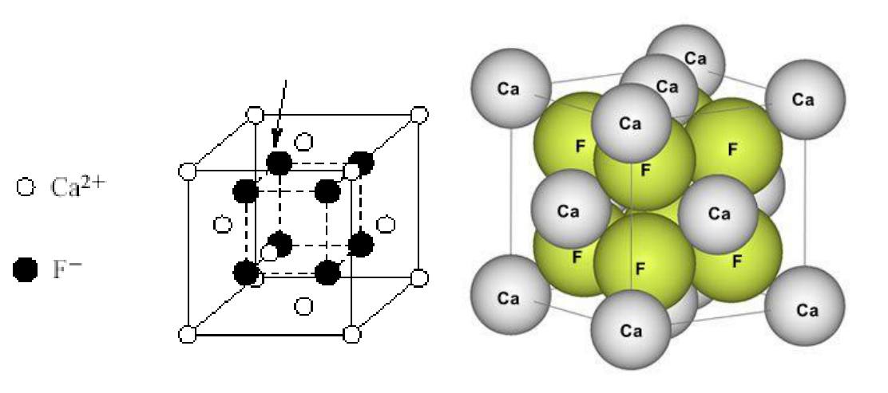

3rd Midterm: Exam-Style Problems
16 exam-style problems for Assessment Test III (5 points each). Part II of the real third partial is a composite-materials problem (unidirectional rule of mixtures, hybrid specific properties, or reinforcement selection). Ceramic crystal structure (Unit 8) and polymer molecular-weight/crystallinity (Unit 9) problems from the finals are also available for targeted practice in the Exam simulator.
Composite materials (Part II standard · 5 points) 10 problems
P21 — Unidirectional carbon-epoxy rod under axial load
A structural tie rod for an aircraft control linkage is made from a unidirectional continuous-fibre composite consisting of $60\ \text{vol\%}$ aligned PAN carbon fibres in an epoxy resin matrix. The constituent properties are given in the table below:
| Constituent | Density ($\text{g/cm}^3$) | Elastic modulus (GPa) | Tensile strength (MPa) |
|---|---|---|---|
| PAN carbon fibre ($f$) | 1.78 | 280 | 3600 |
| Epoxy resin ($m$) | 1.22 | 3.20 | 72.0 |
Data and model
Data
| Quantity | Symbol | Value given | In SI |
|---|---|---|---|
| Fibre volume fraction | $V_f$ | $60\ \%$ | $0.60$ (dimensionless) |
| Matrix volume fraction | $V_m$ | $1 - V_f = 40\ \%$ | $0.40$ (dimensionless) |
| Fibre density | $\rho_f$ | $1.78\ \text{g/cm}^3$ | $1780\ \text{kg/m}^3$ |
| Matrix density | $\rho_m$ | $1.22\ \text{g/cm}^3$ | $1220\ \text{kg/m}^3$ |
| Fibre elastic modulus | $E_f$ | $280\ \text{GPa}$ | $280\times10^{9}\ \text{Pa}$ |
| Matrix elastic modulus | $E_m$ | $3.20\ \text{GPa}$ | $3.20\times10^{9}\ \text{Pa}$ |
| Fibre tensile strength | $\sigma_f^*$ | $3600\ \text{MPa}$ | $3600\times10^{6}\ \text{Pa}$ |
| Matrix tensile strength | $\sigma_m^*$ | $72.0\ \text{MPa}$ | $72.0\times10^{6}\ \text{Pa}$ |
| Rod diameter (part c) | $d$ | $16.0\ \text{mm}$ | $1.60\times10^{-2}\ \text{m}$ |
| Applied longitudinal stress (part c) | $\sigma_C$ | $85.0\ \text{MPa}$ | $85.0\times10^{6}\ \text{Pa}$ |
| Initial rod length (part d) | $L_0$ | $1.40\ \text{m}$ | $1.40\ \text{m}$ |
Model
- Longitudinal isostrain loading (direction 1, parallel to the fibres): $\varepsilon_{1C} = \varepsilon_f = \varepsilon_m$, $\sigma_{1C} = V_f\sigma_f + V_m\sigma_m$, and $E_{1C} = V_f E_f + V_m E_m$ [Session 22, Slides 21–22].
- Transverse isostress loading (direction 2, perpendicular to the fibres): $\sigma_{2C} = \sigma_f = \sigma_m$, $\varepsilon_{2C} = V_f\varepsilon_f + V_m\varepsilon_m$, and $\frac{1}{E_{2C}} = \frac{V_f}{E'_f} + \frac{V_m}{E_m}$ [Session 22, Slides 23–24].
- Composite density and weight fractions: $\rho_c = V_f\rho_f + V_m\rho_m$ and $w_i = \frac{V_i\rho_i}{\rho_c}$ [Session 22, Slide 27].
- Longitudinal composite tensile strength (rule of mixtures): $\sigma_{1C}^* = V_f\sigma_f^* + V_m\sigma_m^*$ [Session 22, Slide 26].
- Specific tensile strength: $\sigma_{1C}^*/\rho_c$ [Session 21, Slide 43].
- Hypotheses: zero porosity ($V_f + V_m = 1$); continuous, perfectly aligned, uniformly spaced, linearly elastic and isotropic fibres ($E'_f = E_f$); linearly elastic, homogeneous, isotropic matrix; perfect interfacial bonding with no debonding or slip [Session 22, Slide 20].
Part (a) · 1.2 points
Determine the longitudinal elastic modulus $E_{1C}$ and the transverse elastic modulus $E_{2C}$ of the composite.
Longitudinal modulus $E_{1C}$ under isostrain conditions
Along direction 1 (parallel to the fibres), the strain is identical in fibres and matrix, giving the rule of mixtures [Session 22, Slide 22]:
Substituting $V_f = 0.60$, $V_m = 0.40$, $E_f = 280\times10^{9}\ \text{Pa}$, and $E_m = 3.20\times10^{9}\ \text{Pa}$:
Notice that the fibres contribute $168.0/169.28 = 99.2\ \%$ of the longitudinal stiffness, while the matrix contributes less than $1\ \%$.
Transverse modulus $E_{2C}$ under isostress conditions
Perpendicular to the fibres (direction 2), fibres and matrix carry the same stress in series, so their strains add in proportion to volume fraction [Session 22, Slides 23–24]. Treating the fibres as isotropic ($E'_f = E_f = 280\times10^{9}\ \text{Pa}$):
Evaluating each compliance term explicitly:
Taking the reciprocal gives the transverse elastic modulus:
Equivalently, putting the fractions over a common denominator gives $E_{2C} = \frac{E_f E_m}{V_f E_m + V_m E_f} = \frac{280\times 3.20}{0.60\times 3.20 + 0.40\times 280} = \frac{896.0}{113.92} = 7.865\ \text{GPa}$.
- $E_{1C} = 169.3\ \text{GPa} = 1.693\times10^{11}\ \text{Pa}$
- $E_{2C} = 7.865\ \text{GPa} = 7.865\times10^{9}\ \text{Pa}$
Part (b) · 1 point
Calculate the composite density $\rho_c$ and the weight fractions $w_f$ and $w_m$ of the fibres and epoxy matrix.
Composite density $\rho_c$
With zero porosity, $1\ \text{m}^3$ of composite contains $0.60\ \text{m}^3$ of carbon fibres and $0.40\ \text{m}^3$ of epoxy. Applying the rule of mixtures for density [Session 22, Slide 27] with $\rho_f = 1780\ \text{kg/m}^3$ and $\rho_m = 1220\ \text{kg/m}^3$:
Converting back to $\text{g/cm}^3$ ($1000\ \text{kg/m}^3 = 1\ \text{g/cm}^3$), $\rho_c = 1.556\ \text{g/cm}^3$.
Weight fractions $w_f$ and $w_m$
In $1\ \text{m}^3$ of composite, the fibre mass is $m_f = V_f\rho_f = 1068\ \text{kg}$ and the matrix mass is $m_m = V_m\rho_m = 488\ \text{kg}$, out of a total mass $\rho_c = 1556\ \text{kg}$:
Check: $w_f + w_m = 0.6864 + 0.3136 = 1.0000$. Because carbon fibres are denser than epoxy ($1780 > 1220\ \text{kg/m}^3$), their mass fraction ($68.64\ \%$) exceeds their volume fraction ($60.0\ \%$).
- $\rho_c = 1556\ \text{kg/m}^3 = 1.556\ \text{g/cm}^3$
- $w_f = 0.6864$ ($68.64\ \text{wt\%}$), $w_m = 0.3136$ ($31.36\ \text{wt\%}$)
Part (c) · 1.6 points
A cylindrical rod $16.0\ \text{mm}$ in diameter is stressed longitudinally to $85.0\ \text{MPa}$. Find the total axial force $F_C$, the load ratio $F_f/F_m$, the forces $F_f$ and $F_m$, and the phase stresses $\sigma_f$ and $\sigma_m$.
Cross-sectional area and total axial force
With diameter $d = 16.0\ \text{mm} = 1.60\times10^{-2}\ \text{m}$, the circular cross-sectional area is:
Multiplying by the applied longitudinal stress $\sigma_C = 85.0\times10^{6}\ \text{Pa}$ gives the total axial force:
Fibre-to-matrix load ratio $F_f/F_m$
Under isostrain loading, $\varepsilon_f = \varepsilon_m = \varepsilon$ and both constituents share the same length, so the area ratio equals the volume-fraction ratio, $A_f/A_m = V_f/V_m$ [Session 22, Slides 21–22]. Using Hooke's law $\sigma_i = E_i\varepsilon$ in each constituent:
Substituting the numbers:
Forces $F_f$ and $F_m$ carried by fibres and matrix
From $F_C = F_f + F_m$ and $F_f = 131.25\,F_m$, substituting into the total force gives $F_C = 132.25\,F_m$, or equivalently using the load-share fractions $F_f/F_C = V_f E_f / E_{1C}$:
Check: $F_f/F_m = 16\,961 / 129.2 = 131.3$, and the fibres carry $99.24\ \%$ of the axial load.
Longitudinal strain and constituent stresses $\sigma_f$ and $\sigma_m$
First check that the composite is in the linear elastic regime by computing the common axial strain $\varepsilon = \sigma_C / E_{1C}$:
Applying Hooke's law $\sigma_i = E_i\varepsilon$ to each constituent:
As an independent cross-check, $\sigma_f = F_f / (V_f A_C) = 16\,961 / (0.60\times 2.0106\times10^{-4}) = 140.6\ \text{MPa}$ and $\sigma_m = F_m / (V_m A_C) = 129.2 / (0.40\times 2.0106\times10^{-4}) = 1.607\ \text{MPa}$. Both stresses are far below the failure strengths ($140.6\ \text{MPa} \ll 3600\ \text{MPa}$ and $1.607\ \text{MPa} \ll 72.0\ \text{MPa}$), confirming elastic behaviour.
- $A_C = 2.011\times10^{-4}\ \text{m}^2$, $F_C = 17\,090\ \text{N}$ ($17.09\ \text{kN}$)
- $F_f/F_m = 131.3$, $F_f = 16\,961\ \text{N}$, $F_m = 129.2\ \text{N}$
- $\varepsilon = 5.021\times10^{-4}$, $\sigma_f = 140.6\ \text{MPa}$, $\sigma_m = 1.607\ \text{MPa}$
Part (d) · 1.2 points
Calculate the axial elongation $\Delta L$ of a $1.40\ \text{m}$ rod under this stress, and estimate the composite's longitudinal specific tensile strength $\sigma_{1C}^*/\rho_c$.
Axial elongation $\Delta L$
From the definition of engineering strain $\varepsilon = \Delta L / L_0$, multiplying both sides by $L_0 = 1.40\ \text{m}$ gives:
Longitudinal tensile strength $\sigma_{1C}^*$ and specific strength $\sigma_{1C}^*/\rho_c$
Using the rule of mixtures for longitudinal tensile strength [Session 22, Slide 26] with the tabulated fibre and matrix strengths:
Dividing by the composite density in SI ($\rho_c = 1556\ \text{kg/m}^3$) [Session 21, Slide 43]:
Notice the exact equivalence $(\text{MPa}\cdot\text{cm}^3/\text{g}) = \text{kN}\cdot\text{m/kg}$: $2188.8 / 1.556 = 1407\ \text{kN}\cdot\text{m/kg}$.
- $\Delta L = 7.030\times10^{-4}\ \text{m} = 0.703\ \text{mm}$
- $\sigma_{1C}^* = 2189\ \text{MPa}$, $\sigma_{1C}^*/\rho_c = 1407\ \text{kN}\cdot\text{m/kg} = 1.407\times10^{6}\ \text{m}^2/\text{s}^2$
Interpretation and checks
- The unidirectional carbon-epoxy rod shows extreme anisotropy: $E_{1C}/E_{2C} = 169.3 / 7.865 = 21.5$. Along the fibres, the carbon reinforcement carries $99.24\ \%$ of the load ($F_f/F_m = 131.3$) at a stress of $140.6\ \text{MPa}$ compared with $1.607\ \text{MPa}$ in the epoxy, because $\sigma_f/\sigma_m = E_f/E_m = 87.5$. Across the fibres, the compliant epoxy dominates and the matrix-only approximation $E_m/V_m = 3.20/0.40 = 8.00\ \text{GPa}$ [Session 22, Slide 24] lies within $1.7\ \%$ of the exact $7.865\ \text{GPa}$.
- Control case: if the matrix stiffness vanished ($E_m \to 0$), then $E_{1C} \to V_f E_f = 168.0\ \text{GPa}$, $F_f/F_C \to 1$, and $E_{2C} \to 0$ (zero transverse load path). Conversely, if $V_f \to 0$, all properties revert to neat epoxy ($\rho = 1220\ \text{kg/m}^3$, $E = 3.20\ \text{GPa}$, $\sigma = 72.0\ \text{MPa}$).
- SI dimensional check: $F_C = \sigma_C A_C$ has units $(\text{N/m}^2)\cdot\text{m}^2 = \text{N}$; $E_i\varepsilon$ is $\text{Pa}\times 1 = \text{Pa}$; $\Delta L = \varepsilon L_0$ is in $\text{m}$; and specific strength $\sigma_{1C}^*/\rho_c$ has units $(\text{N/m}^2)/(\text{kg/m}^3) = \text{N}\cdot\text{m/kg} = \text{m}^2/\text{s}^2 = \text{J/kg}$.
- Common mistake: splitting the axial force by volume fraction ($F_f = 0.60\,F_C = 10\,254\ \text{N}$) instead of stiffness-weighted area ($V_f E_f / E_{1C} = 0.9924$), or forgetting to convert $\text{g/cm}^3$ to $\text{kg/m}^3$ when computing specific strength in SI ($\text{N}\cdot\text{m/kg}$).
P22 — Mass-specified boron-aluminium aerospace strut
A metal-matrix composite (MMC) for an aerospace pylon strut is manufactured by introducing $4.20\ \text{kg}$ of continuous, unidirectionally aligned boron fibres into $7.80\ \text{kg}$ of an aluminium alloy matrix. The properties of the two constituents are:
- Boron fibres ($f$): $\rho_f = 2.35\ \text{g/cm}^3$, $E_f = 390\ \text{GPa}$.
- Aluminium alloy matrix ($m$): $\rho_m = 2.70\ \text{g/cm}^3$, $E_m = 70.0\ \text{GPa}$.
Data and model
Data
| Quantity | Symbol | Value given | In SI |
|---|---|---|---|
| Mass of boron fibres | $m_f$ | $4.20\ \text{kg}$ | $4.20\ \text{kg}$ |
| Mass of aluminium matrix | $m_m$ | $7.80\ \text{kg}$ | $7.80\ \text{kg}$ |
| Boron fibre density | $\rho_f$ | $2.35\ \text{g/cm}^3$ | $2350\ \text{kg/m}^3$ |
| Aluminium matrix density | $\rho_m$ | $2.70\ \text{g/cm}^3$ | $2700\ \text{kg/m}^3$ |
| Boron elastic modulus | $E_f$ | $390\ \text{GPa}$ | $390\times10^{9}\ \text{Pa}$ |
| Aluminium elastic modulus | $E_m$ | $70.0\ \text{GPa}$ | $70.0\times10^{9}\ \text{Pa}$ |
| Strut diameter (part d) | $d$ | $24.0\ \text{mm}$ | $2.40\times10^{-2}\ \text{m}$ |
| Strut length (part d) | $L_0$ | $1.80\ \text{m}$ | $1.80\ \text{m}$ |
| Applied axial force (part d) | $F_C$ | $95.0\ \text{kN}$ | $95.0\times10^{3}\ \text{N}$ |
Model
- Constituent volumes from mass and density: $\mathcal{V}_i = m_i / \rho_i$, with total volume $\mathcal{V}_c = \mathcal{V}_f + \mathcal{V}_m$ and volume fractions $V_i = \mathcal{V}_i / \mathcal{V}_c$.
- Composite density: $\rho_c = (m_f + m_m)/\mathcal{V}_c = V_f\rho_f + V_m\rho_m$ [Session 22, Slide 27].
- Longitudinal isostrain modulus: $E_{1C} = V_f E_f + V_m E_m$ [Session 22, Slide 22].
- Transverse isostress modulus: $\frac{1}{E_{2C}} = \frac{V_f}{E'_f} + \frac{V_m}{E_m}$ [Session 22, Slide 24].
- Axial load fraction and elongation: $\frac{F_f}{F_C} = \frac{V_f E_f}{E_{1C}}$ and $\Delta L = \varepsilon L_0 = \frac{F_C L_0}{A_C E_{1C}}$ [Session 22, Slides 21–22].
- Hypotheses: zero void porosity; isotropic fibres ($E'_f = E_f$); perfect fibre-matrix bonding; linearly elastic deformation in both phases [Session 22, Slide 20].
Part (a) · 1.2 points
Convert the given constituent masses into volume fractions $V_f$ (boron) and $V_m$ (aluminium).
Volume of each constituent in SI
Convert the densities to $\text{kg/m}^3$: $\rho_f = 2.35\times10^{3} = 2350\ \text{kg/m}^3$ and $\rho_m = 2.70\times10^{3} = 2700\ \text{kg/m}^3$. Using $\mathcal{V}_i = m_i / \rho_i$:
Total volume and volume fractions
Assuming no porosity, the total composite volume is the sum of the constituent volumes:
Dividing each constituent volume by $\mathcal{V}_c$ gives the volume fractions:
Check: $V_f + V_m = 0.3822 + 0.6178 = 1.0000$. Because boron is less dense than aluminium ($2350 < 2700\ \text{kg/m}^3$), its volume fraction ($38.22\ \%$) is larger than its mass fraction ($w_f = 4.20/12.0 = 35.0\ \%$).
- $\mathcal{V}_f = 1.787\times10^{-3}\ \text{m}^3$, $\mathcal{V}_m = 2.889\times10^{-3}\ \text{m}^3$, $\mathcal{V}_c = 4.676\times10^{-3}\ \text{m}^3$
- $V_f = 0.3822$ ($38.22\ \text{vol\%}$), $V_m = 0.6178$ ($61.78\ \text{vol\%}$)
Part (b) · 0.8 points
Compute the density $\rho_c$ of the boron-aluminium composite.
Total mass over total volume
The total mass of the composite is $m_c = m_f + m_m = 4.20\ \text{kg} + 7.80\ \text{kg} = 12.00\ \text{kg}$. Dividing by the total volume $\mathcal{V}_c = 4.6761\times10^{-3}\ \text{m}^3$:
Cross-check by the rule of mixtures
Using the volume fractions from part (a) in $\rho_c = V_f\rho_f + V_m\rho_m$ [Session 22, Slide 27]:
Both calculations agree and lie strictly between the constituent densities ($2350 < 2566 < 2700\ \text{kg/m}^3$).
- $\rho_c = 2566\ \text{kg/m}^3 = 2.566\ \text{g/cm}^3$
Part (c) · 1.5 points
Calculate the longitudinal modulus $E_{1C}$ and the transverse modulus $E_{2C}$ of the composite.
Longitudinal elastic modulus $E_{1C}$
Under isostrain loading parallel to the boron fibres [Session 22, Slide 22]:
Evaluating each term explicitly:
Transverse elastic modulus $E_{2C}$
Under isostress loading perpendicular to the fibres [Session 22, Slide 24], taking $E'_f = E_f = 390\times10^{9}\ \text{Pa}$:
Computing the two compliance terms:
Inverting to obtain the transverse modulus:
- $E_{1C} = 192.3\ \text{GPa} = 1.923\times10^{11}\ \text{Pa}$
- $E_{2C} = 102.0\ \text{GPa} = 1.020\times10^{11}\ \text{Pa}$
Part (d) · 1.5 points
A cylindrical strut of this composite, $24.0\ \text{mm}$ in diameter and $1.80\ \text{m}$ long, carries an axial tensile load of $95.0\ \text{kN}$ parallel to the fibres. Determine the elongation $\Delta L$ and the load fraction $F_f/F_C$ (and force $F_f$) carried by the boron fibres.
Area, composite stress and axial strain
With $d = 24.0\ \text{mm} = 2.40\times10^{-2}\ \text{m}$ and $F_C = 95.0\ \text{kN} = 9.50\times10^{4}\ \text{N}$:
From Hooke's law for the composite along direction 1, $\sigma_C = E_{1C}\varepsilon$, dividing by $E_{1C} = 1.9231\times10^{11}\ \text{Pa}$:
Axial elongation $\Delta L$
Multiplying the strain by the initial strut length $L_0 = 1.80\ \text{m}$:
Load fraction and force carried by the boron fibres
Because fibres and matrix undergo the same axial strain $\varepsilon$, the force carried by the fibres is $F_f = \sigma_f A_f = (E_f\varepsilon)(V_f A_C)$ while the total force is $F_C = \sigma_C A_C = (E_{1C}\varepsilon) A_C$ [Session 22, Slides 21–22]. Taking their ratio eliminates $\varepsilon$ and $A_C$:
Multiplying by the applied load $F_C = 95.0\ \text{kN}$ yields the force in the boron fibres:
The aluminium matrix carries the remaining $F_m = 95.0 - 73.64 = 21.36\ \text{kN}$ ($22.49\ \%$ of the load).
- $A_C = 4.524\times10^{-4}\ \text{m}^2$, $\sigma_C = 210.0\ \text{MPa}$, $\varepsilon = 1.092\times10^{-3}$
- $\Delta L = 1.966\times10^{-3}\ \text{m} = 1.966\ \text{mm}$
- $F_f/F_C = 0.7751$ ($77.51\ \%$), $F_f = 73.64\ \text{kN}$ ($73\,635\ \text{N}$)
Interpretation and checks
- Unlike polymer-matrix composites, where the matrix carries under $2\ \%$ of the longitudinal load, here the aluminium matrix ($E_m = 70\ \text{GPa}$) is already stiff, so it carries $22.5\ \%$ of the axial load and keeps the transverse modulus high ($E_{2C} = 102.0\ \text{GPa}$, over half of $E_{1C}$). Even so, adding $38.2\ \text{vol\%}$ boron lowers the density below pure aluminium ($2566 < 2700\ \text{kg/m}^3$) while nearly tripling longitudinal stiffness ($192.3$ vs $70.0\ \text{GPa}$).
- Control case: if the boron mass were added with the same density as aluminium ($\rho_f = \rho_m$), the volume fraction would equal the mass fraction $w_f = 0.350$. With $V_f = 0$, $E_{1C} = E_{2C} = 70.0\ \text{GPa}$ and $F_f/F_C = 0$.
- SI dimensional check: $\mathcal{V}_i = m_i/\rho_i$ has units $\text{kg}/(\text{kg/m}^3) = \text{m}^3$; $1/E_{2C}$ has units $\text{Pa}^{-1}$; $\varepsilon = F_C/(A_C E_{1C})$ has units $\text{N}/(\text{m}^2\cdot\text{N/m}^2) = 1$; $\Delta L = \varepsilon L_0$ has units $\text{m}$.
- Common mistake: substituting mass fractions ($w_f = 4.20/12.0 = 0.350$, $w_m = 0.650$) directly into the rule of mixtures for $E_{1C}$ and $\rho_c$ instead of converting masses to volumes first (which would give $E_{1C} = 182.0\ \text{GPa}$ instead of $192.3\ \text{GPa}$).
P23 — Glass-epoxy composite replacing metallic plate
An aircraft structural fairing plate measuring $1.20\ \text{m}$ long, $0.25\ \text{m}$ wide, and $8.0\ \text{mm}$ thick is currently machined from aluminium alloy Al 2024-T3. To reduce structural mass, engineers evaluate replacing the metallic plate with a plate of the exact same outer dimensions made from a unidirectional continuous E-glass/epoxy composite containing $55\ \text{vol\%}$ E-glass fibres aligned along the plate length. Constituent and alloy properties are listed below:
| Material | Density ($\text{g/cm}^3$) | Elastic modulus (GPa) | Tensile strength (MPa) |
|---|---|---|---|
| E-glass fibre ($f$) | 2.58 | 72.5 | 3450 |
| Epoxy resin ($m$) | 1.20 | 3.20 | 68.0 |
| Al 2024-T3 ($\text{Al}$) | 2.78 | 72.4 | 470 |
Data and model
Data
| Quantity | Symbol | Value given | In SI |
|---|---|---|---|
| E-glass volume fraction | $V_f$ | $55\ \%$ | $0.55$ (dimensionless) |
| Epoxy volume fraction | $V_m$ | $1 - V_f = 45\ \%$ | $0.45$ (dimensionless) |
| E-glass density | $\rho_f$ | $2.58\ \text{g/cm}^3$ | $2580\ \text{kg/m}^3$ |
| Epoxy density | $\rho_m$ | $1.20\ \text{g/cm}^3$ | $1200\ \text{kg/m}^3$ |
| Al 2024-T3 density | $\rho_{\text{Al}}$ | $2.78\ \text{g/cm}^3$ | $2780\ \text{kg/m}^3$ |
| E-glass elastic modulus | $E_f$ | $72.5\ \text{GPa}$ | $72.5\times10^{9}\ \text{Pa}$ |
| Epoxy elastic modulus | $E_m$ | $3.20\ \text{GPa}$ | $3.20\times10^{9}\ \text{Pa}$ |
| Al 2024-T3 elastic modulus | $E_{\text{Al}}$ | $72.4\ \text{GPa}$ | $72.4\times10^{9}\ \text{Pa}$ |
| E-glass tensile strength | $\sigma_f$ | $3450\ \text{MPa}$ | $3450\times10^{6}\ \text{Pa}$ |
| Epoxy tensile strength | $\sigma_m$ | $68.0\ \text{MPa}$ | $68.0\times10^{6}\ \text{Pa}$ |
| Plate length | $L$ | $1.20\ \text{m}$ | $1.20\ \text{m}$ |
| Plate width | $b$ | $0.25\ \text{m}$ | $0.25\ \text{m}$ |
| Plate thickness | $t$ | $8.0\ \text{mm}$ | $8.0\times10^{-3}\ \text{m}$ |
Model
- Composite density and weight fractions: $\rho_c = V_f\rho_f + V_m\rho_m$ and $w_i = \frac{V_i\rho_i}{\rho_c}$ [Session 22, Slide 27].
- Longitudinal isostrain modulus and load sharing: $E_{1C} = V_f E_f + V_m E_m$ and $\frac{F_f}{F_C} = \frac{V_f E_f}{E_{1C}}$ [Session 22, Slides 21–22].
- Longitudinal composite tensile strength: $\sigma_{1C} = V_f\sigma_f + V_m\sigma_m$ [Session 22, Slide 26].
- Percentage change relative to the replaced metallic baseline: $\Delta X / X_{\text{Al}} = (X_c - X_{\text{Al}})/X_{\text{Al}}$.
- Hypotheses: zero porosity; perfect bonding; unidirectional continuous alignment parallel to the $1.20\ \text{m}$ axis; identical plate volume $\mathcal{V} = L\,b\,t$ for both materials [Session 22, Slide 20].
Part (a) · 1.2 points
From $V_f = 0.55$, determine the composite density $\rho_c$ and the weight fractions $w_f$ and $w_m$.
Composite density $\rho_c$
With $V_f = 0.55$ and $V_m = 1 - 0.55 = 0.45$, the density of the composite is the volume-weighted sum [Session 22, Slide 27]:
Fibre and matrix weight fractions
In $1\ \text{m}^3$ of composite, the glass fibres account for $1419\ \text{kg}$ and the epoxy matrix accounts for $540\ \text{kg}$ out of $1959\ \text{kg}$:
Check: $0.7243 + 0.2757 = 1.0000$. Because E-glass is more than twice as dense as epoxy ($2580$ vs $1200\ \text{kg/m}^3$), the weight fraction of glass fibres ($72.43\ \%$) is much higher than their volume fraction ($55\ \%$).
- $\rho_c = 1959\ \text{kg/m}^3 = 1.959\ \text{g/cm}^3$
- $w_f = 0.7243$ ($72.43\ \text{wt\%}$), $w_m = 0.2757$ ($27.57\ \text{wt\%}$)
Part (b) · 1.3 points
Calculate the longitudinal modulus $E_{1C}$ and the percentage stiffness change relative to Al 2024-T3. Explain whether the composite is stiffer or more compliant than the alloy.
Longitudinal elastic modulus $E_{1C}$
Along the fibre direction (isostrain) [Session 22, Slide 22]:
Percentage change in stiffness relative to Al 2024-T3
Since the composite replaces the aluminium alloy, Al 2024-T3 is the baseline in the denominator:
Physical explanation
The E-glass/epoxy composite is $42.94\ \%$ less stiff (more compliant) than Al 2024-T3. E-glass fibres have almost the same elastic modulus as aluminium ($72.5\ \text{GPa}$ vs $72.4\ \text{GPa}$), so mixing $55\ \text{vol\%}$ E-glass with $45\ \text{vol\%}$ compliant epoxy ($3.20\ \text{GPa}$) necessarily lowers the longitudinal modulus below $72.4\ \text{GPa}$. Unlike carbon/epoxy, glass/epoxy is chosen for high tensile strength and low cost rather than high stiffness [Session 21, Slide 17].
- $E_{1C} = 41.32\ \text{GPa}$
- Percentage stiffness change: $-42.94\ \%$ (the E-glass/epoxy composite is more compliant than Al 2024-T3)
Part (c) · 1.3 points
Estimate the longitudinal tensile strength $\sigma_{1C}$ and the fibre load share $F_f/F_C$.
Longitudinal tensile strength $\sigma_{1C}$
Using the rule of mixtures for longitudinal tensile strength [Session 22, Slide 26]:
This is $1928.1 / 470 = 4.10$ times the tensile strength of Al 2024-T3 ($470\ \text{MPa}$).
Fibre load share $F_f/F_C$
Under longitudinal isostrain loading, $\varepsilon_f = \varepsilon_C = \varepsilon$, with $F_f = \sigma_f A_f = E_f\varepsilon V_f A_C$ and $F_C = E_{1C}\varepsilon A_C$ [Session 22, Slides 21–22]:
The E-glass fibres carry $96.51\ \%$ of the total axial load, leaving $3.49\ \%$ on the epoxy matrix.
- $\sigma_{1C} = 1928\ \text{MPa} = 1.928\ \text{GPa}$ (over four times the strength of Al 2024-T3)
- $F_f/F_C = 0.9651$ ($96.51\ \%$ of the axial load carried by the fibres)
Part (d) · 1.2 points
For the fixed-geometry plate ($1.20\ \text{m} \times 0.25\ \text{m} \times 8.0\ \text{mm}$), determine the masses $m_c$ and $m_{\text{Al}}$, the mass difference $\Delta m$, and the percentage weight change.
Plate volume
Converting $t = 8.0\ \text{mm} = 8.0\times10^{-3}\ \text{m}$:
Plate masses
Multiplying the volume by the respective densities in SI:
Mass change and percentage weight change
At fixed geometry, the E-glass/epoxy plate is $1.970\ \text{kg}$ ($29.53\ \%$) lighter than the Al 2024-T3 plate (note that under uniform gravity, percentage weight change equals percentage mass change).
- $\mathcal{V} = 2.400\times10^{-3}\ \text{m}^3$
- $m_c = 4.702\ \text{kg}$, $m_{\text{Al}} = 6.672\ \text{kg}$
- $\Delta m = -1.970\ \text{kg}$ ($1.970\ \text{kg}$ lighter), percentage weight change $= -29.53\ \%$
Interpretation and checks
- Replacing Al 2024-T3 at fixed thickness with $55\ \text{vol\%}$ E-glass/epoxy delivers a $29.5\ \%$ mass saving and a fourfold increase in longitudinal strength, at the cost of a $42.9\ \%$ drop in longitudinal modulus (specific modulus drops from $72.4/2.78 = 26.04$ to $41.32/1.959 = 21.09\ \text{MN}\cdot\text{m/kg}$). If stiffness is the limiting design criterion (e.g., deflection or buckling), the composite plate would need a larger thickness or carbon fibres instead of E-glass.
- Control case: even at $V_f = 1.0$ (pure E-glass, $72.5\ \text{GPa}$), the stiffness gain over Al 2024-T3 ($72.4\ \text{GPa}$) would be only $+0.14\ \%$; thus no glass/epoxy volume fraction can match Al 2024-T3 stiffness without exceeding $V_f \approx 99.9\ \%$.
- SI dimensional check: $\mathcal{V} = L b t$ is in $\text{m}^3$; $m = \rho\mathcal{V}$ is in $(\text{kg/m}^3)\cdot\text{m}^3 = \text{kg}$; relative changes $\Delta E/E_{\text{Al}}$ and $\Delta m/m_{\text{Al}}$ are dimensionless ratios.
- Common mistake: placing the new composite value in the denominator when computing percentage change ($(41.32 - 72.4)/41.32 = -75.2\ \%$ instead of $-42.94\ \%$), or assuming every fibre composite is automatically stiffer than aluminium.
P24 — Carbon-polycarbonate stiffener micromechanics
A continuous, aligned fibre-reinforced thermoplastic stiffener is produced from $38\ \text{vol\%}$ PAN carbon fibres and $62\ \text{vol\%}$ polycarbonate (PC) matrix, with a cross-sectional area of $280\ \text{mm}^2$. In service it supports a longitudinal tensile load of $52.0\ \text{kN}$ parallel to the fibres. The elastic moduli are $E_f = 240\ \text{GPa}$ for the carbon fibres and $E_m = 2.40\ \text{GPa}$ for the polycarbonate matrix. The tensile strength of the carbon fibres is $\sigma_f^* = 3400\ \text{MPa}$, the matrix stress at the fibre-fracture strain is $\sigma'_m = 34.0\ \text{MPa}$, and the ultimate tensile strength of unreinforced polycarbonate is $\sigma_m^* = 65.0\ \text{MPa}$.
Data and model
Data
| Quantity | Symbol | Value given | In SI |
|---|---|---|---|
| Fibre volume fraction | $V_f$ | $38\ \%$ | $0.38$ (dimensionless) |
| Matrix volume fraction | $V_m$ | $62\ \%$ | $0.62$ (dimensionless) |
| Cross-sectional area | $A_C$ | $280\ \text{mm}^2$ | $2.80\times10^{-4}\ \text{m}^2$ |
| Longitudinal axial force | $F_C$ | $52.0\ \text{kN}$ | $52.0\times10^{3}\ \text{N}$ |
| Carbon fibre modulus | $E_f$ | $240\ \text{GPa}$ | $240\times10^{9}\ \text{Pa}$ |
| Polycarbonate matrix modulus | $E_m$ | $2.40\ \text{GPa}$ | $2.40\times10^{9}\ \text{Pa}$ |
| Carbon fibre tensile strength | $\sigma_f^*$ | $3400\ \text{MPa}$ | $3400\times10^{6}\ \text{Pa}$ |
| Matrix stress at fibre-fracture strain | $\sigma'_m$ | $34.0\ \text{MPa}$ | $34.0\times10^{6}\ \text{Pa}$ |
| Polycarbonate ultimate tensile strength | $\sigma_m^*$ | $65.0\ \text{MPa}$ | $65.0\times10^{6}\ \text{Pa}$ |
Model
- Longitudinal isostrain loading: $\varepsilon_{1C} = \varepsilon_f = \varepsilon_m$, $E_{1C} = V_f E_f + V_m E_m$, and $F_C = F_f + F_m$ [Session 22, Slides 21–22].
- Transverse isostress loading: $\sigma_{2C} = \sigma_f = \sigma_m$ and $\frac{1}{E_{2C}} = \frac{V_f}{E'_f} + \frac{V_m}{E_m}$ [Session 22, Slides 23–24].
- Longitudinal tensile strength before fibre fracture: $\sigma_{1C} = V_f\sigma_f^* + (1 - V_f)\sigma'_m$ [Session 22, Slide 26].
- Post-fibre-fracture residual composite strength (carried by matrix alone): $\sigma_{C,\text{res}} = \sigma_m^*(1 - V_f)$ [Session 22, Slide 26].
- Minimum and critical fibre volume fractions: intersection of the two failure lines $V_{\min} = \frac{\sigma_m^* - \sigma'_m}{\sigma_f^* + \sigma_m^* - \sigma'_m}$, and strengthening threshold $V_{\text{crit}} = \frac{\sigma_m^* - \sigma'_m}{\sigma_f^* - \sigma'_m}$ [Session 22, Slide 26].
- Hypotheses: continuous aligned fibres with perfect bonding; isotropic linearly elastic fibres ($E'_f = E_f$) up to brittle fracture at $\varepsilon_f^* = \sigma_f^*/E_f$; no void porosity [Session 22, Slide 20].
Part (a) · 1.2 points
Compute the longitudinal elastic modulus $E_{1C}$ and transverse elastic modulus $E_{2C}$ of the stiffener.
Longitudinal elastic modulus $E_{1C}$
With $V_f = 0.38$ and $V_m = 0.62$, the isostrain rule of mixtures [Session 22, Slide 22] yields:
Transverse elastic modulus $E_{2C}$
Perpendicular to the fibres (isostress) [Session 22, Slide 24], with $E'_f = E_f = 240\times10^{9}\ \text{Pa}$:
Inverting gives the transverse modulus:
- $E_{1C} = 92.69\ \text{GPa} = 9.269\times10^{10}\ \text{Pa}$
- $E_{2C} = 3.847\ \text{GPa} = 3.847\times10^{9}\ \text{Pa}$
Part (b) · 1.2 points
Calculate the fibre-to-matrix load ratio $F_f/F_m$ under longitudinal loading and explain physically why one constituent supports almost the entire load.
Derivation and value of $F_f/F_m$
For continuous aligned fibres of uniform length ($L_f = L_m = L_C$), the ratio of constituent cross-sectional areas equals the ratio of volume fractions, $A_f / A_m = V_f / V_m$ [Session 22, Slide 21]. Because the bond is perfect, both constituents experience the exact same axial strain ($\varepsilon_f = \varepsilon_m = \varepsilon$). By Hooke's law, $\sigma_f = E_f\varepsilon$ and $\sigma_m = E_m\varepsilon$, so:
Substituting the given moduli and volume fractions:
The corresponding load share carried by the fibres is $F_f/F_C = 61.29/(61.29 + 1) = 0.9839$ ($98.39\ \%$).
Physical justification
Under longitudinal isostrain loading, the matrix and the fibres are forced to stretch by the same fraction $\varepsilon$. Because the carbon fibres are $E_f / E_m = 240 / 2.40 = 100$ times stiffer than the polycarbonate matrix, developing the same strain $\varepsilon$ requires $100$ times more stress in the fibres ($\sigma_f = 100\,\sigma_m$) [Session 22, Slide 22]. Even though the fibres occupy only $38\ \%$ of the area, their hundredfold higher modulus causes the matrix to transfer almost all axial force into the fibres ($98.39\ \%$), fulfilling the primary load-bearing function of the reinforcement while the polymer matrix serves to distribute stress, separate fibres, and preserve geometry [Session 21, Slide 16].
- $F_f/F_m = 61.29$ (fibres carry $98.39\ \%$ of the axial load)
Part (c) · 1.3 points
Under the longitudinal load of $52.0\ \text{kN}$ on the $280\ \text{mm}^2$ section, compute the composite strain $\varepsilon$ and the stresses $\sigma_f$ and $\sigma_m$ in the fibre and matrix phases.
Average composite stress and shared axial strain
Converting the area to SI ($1\ \text{mm}^2 = 10^{-6}\ \text{m}^2$) gives $A_C = 280\times10^{-6}\ \text{m}^2 = 2.80\times10^{-4}\ \text{m}^2$. With $F_C = 52.0\ \text{kN} = 5.20\times10^{4}\ \text{N}$:
Using Hooke's law for the composite along direction 1 with $E_{1C} = 9.2688\times10^{10}\ \text{Pa}$:
Stresses in the fibre and matrix phases
Since $\varepsilon_f = \varepsilon_m = \varepsilon = 2.0036\times10^{-3}$ (isostrain), Hooke's law gives each constituent stress:
Check: $\sigma_C = V_f\sigma_f + V_m\sigma_m = 0.38(480.88) + 0.62(4.809) = 182.73 + 2.98 = 185.7\ \text{MPa}$, and $\sigma_f/\sigma_m = 100.0 = E_f/E_m$.
- $\sigma_C = 185.7\ \text{MPa}$, $\varepsilon = 2.004\times10^{-3}$
- $\sigma_f = 480.9\ \text{MPa}$, $\sigma_m = 4.809\ \text{MPa}$
Part (d) · 1.3 points
Compute the composite's longitudinal tensile strength $\sigma_{1C}$ and its post-fibre-fracture residual strength $\sigma_m^*(1 - V_f)$. Verify $V_f > V_{\min}$ and explain why unreinforced polycarbonate is stronger than the post-fibre-fracture residual composite strength.
Longitudinal tensile strength at fibre fracture
Because the brittle carbon fibres fracture before the ductile polycarbonate matrix (at $\varepsilon_f^* = 3400\ \text{MPa} / 240\,000\ \text{MPa} = 1.417\times10^{-2}$), the peak composite strength when the fibres break is [Session 22, Slide 26]:
Note that $\sigma'_m = E_m\varepsilon_f^* = 2400\ \text{MPa}\times 0.01417 = 34.0\ \text{MPa}$ is indeed the elastic matrix stress at the fibre fracture strain.
Post-fibre-fracture residual composite strength
Once the fibres fracture, they carry no load across the fracture plane and act effectively as void holes; only the remaining matrix cross-sectional fraction $(1 - V_f)$ supports the force [Session 22, Slide 26]:
This residual stress ($40.30\ \text{MPa}$) is far below $\sigma_{1C} = 1313\ \text{MPa}$ and also below the unreinforced matrix strength ($\sigma_m^* = 65.0\ \text{MPa}$) because $38\ \%$ of the load-bearing section has been lost to broken fibres.
Verification of $V_f > V_{\min}$ and $V_{\text{crit}}$
The minimum volume fraction $V_{\min}$ is the intersection where the fibre-governed line equals the post-fracture residual matrix line [Session 22, Slide 26]:
Expanding the brackets and collecting terms in $V_{\min}$ on the left-hand side:
Dividing both sides by $(\sigma_f^* + \sigma_m^* - \sigma'_m)$ isolates $V_{\min}$:
Similarly, the critical volume fraction $V_{\text{crit}}$ required for the composite to exceed the strength of the unreinforced matrix ($\sigma_{1C} > \sigma_m^*$) satisfies $\sigma_f^* V_{\text{crit}} + \sigma'_m(1 - V_{\text{crit}}) = \sigma_m^*$:
Since $V_f = 0.38 \gg V_{\text{crit}} > V_{\min}$, the carbon fibres truly reinforce the polycarbonate matrix: the stiffener fails catastrophically at $\sigma_{1C} = 1313\ \text{MPa}$ when the fibres break, because the residual matrix alone ($40.30\ \text{MPa}$) cannot carry the $1313\ \text{MPa}$ load.
- $\sigma_{1C} = 1313\ \text{MPa}$, $\sigma_{C,\text{res}} = 40.30\ \text{MPa}$
- $V_{\min} = 9.035\times10^{-3}$ ($0.904\ \text{vol\%}$), $V_{\text{crit}} = 9.210\times10^{-3}$ ($0.921\ \text{vol\%}$): $V_f = 0.38 \gg V_{\min}$ and $V_{\text{crit}}$
- Unreinforced PC ($65.0\ \text{MPa}$) exceeds $\sigma_{C,\text{res}} = 40.30\ \text{MPa}$ because broken fibres leave only $(1 - V_f) = 62\ \%$ of the area to carry load
Interpretation and checks
- The stress-strain curve of the composite lies between the brittle high-slope fibre curve and the ductile low-slope matrix curve (
Session 22, Slide 26). At $V_f = 38\ \%$, the composite is $20.2$ times stronger than unreinforced polycarbonate ($1313\ \text{MPa}$ vs $65.0\ \text{MPa}$) and $38.6$ times stiffer longitudinally ($92.69\ \text{GPa}$ vs $2.40\ \text{GPa}$). - Control case: if only $0.5\ \text{vol\%}$ of carbon fibres ($V_f = 0.005 < V_{\min}$) were added, the fibre-fracture formula would give $0.005(3400) + 0.995(34.0) = 50.83\ \text{MPa}$, whereas the post-fracture matrix branch gives $0.995(65.0) = 64.68\ \text{MPa}$: the broken fibres would simply weaken the polycarbonate from $65.0$ to $64.68\ \text{MPa}$!
- SI dimensional check: $A_C$ is in $\text{m}^2$; $\sigma_C = F_C/A_C$ in $\text{N/m}^2 = \text{Pa}$; $\varepsilon = \sigma_C/E_{1C}$ in $\text{Pa/Pa}$ (dimensionless); $V_{\min}$ and $V_{\text{crit}}$ are ratios of MPa over MPa (dimensionless).
- Common mistake: substituting $V_f = 0.38$ only into $\sigma_m^*(1 - V_f)$ and reporting $40.3\ \text{MPa}$ as the composite strength without checking $V_f > V_{\min}$, or using $\sigma_m^*$ instead of $\sigma'_m$ in the pre-fracture term when $\sigma'_m$ is explicitly provided.
P25 — Hybrid graphite-Kevlar epoxy laminate
A unidirectional aerospace composite laminate contains $60\ \text{vol\%}$ continuous aligned high-modulus graphite (graphite-HM) fibres in an epoxy matrix. The constituent properties are listed in the table below:
| Material | Density ($\text{g/cm}^3$) | Elastic modulus (GPa) | Tensile strength (MPa) |
|---|---|---|---|
| Epoxy resin ($m$) | 1.22 | 3.40 | 68.0 |
| Graphite-HM fibre ($\text{gr}$) | 1.85 | 385 | 2450 |
| Kevlar-49 fibre ($K$) | 1.44 | 131 | 3700 |
Data and model
Data
| Quantity | Symbol | Value given | In SI |
|---|---|---|---|
| Baseline graphite fibre volume fraction | $V_{f,0}$ | $60\ \%$ | $0.60$ (dimensionless) |
| Epoxy matrix volume fraction | $V_m$ | $40\ \%$ | $0.40$ (dimensionless) |
| Graphite replacement fraction (part c) | — | $40\ \%$ of fibre volume | $V_{\text{gr}} = 0.36$, $V_K = 0.24$ |
| Epoxy density | $\rho_m$ | $1.22\ \text{g/cm}^3$ | $1220\ \text{kg/m}^3$ |
| Graphite-HM density | $\rho_{\text{gr}}$ | $1.85\ \text{g/cm}^3$ | $1850\ \text{kg/m}^3$ |
| Kevlar-49 density | $\rho_K$ | $1.44\ \text{g/cm}^3$ | $1440\ \text{kg/m}^3$ |
| Epoxy modulus, strength | $E_m$, $\sigma_m$ | $3.40\ \text{GPa}$, $68.0\ \text{MPa}$ | $3.40\times10^{9}\ \text{Pa}$, $68.0\times10^{6}\ \text{Pa}$ |
| Graphite-HM modulus, strength | $E_{\text{gr}}$, $\sigma_{\text{gr}}$ | $385\ \text{GPa}$, $2450\ \text{MPa}$ | $385\times10^{9}\ \text{Pa}$, $2450\times10^{6}\ \text{Pa}$ |
| Kevlar-49 modulus, strength | $E_K$, $\sigma_K$ | $131\ \text{GPa}$, $3700\ \text{MPa}$ | $131\times10^{9}\ \text{Pa}$, $3700\times10^{6}\ \text{Pa}$ |
Model
- General rule of mixtures for three-constituent hybrids: $\rho_{\text{hyb}} = \sum_i V_i\rho_i$, $E_{\text{hyb}} = \sum_i V_i E_i$, and $\sigma_{\text{hyb}} = \sum_i V_i\sigma_i$ with $\sum_i V_i = 1$ [Session 22, Slides 22, 26–27].
- Weight fraction of constituent $i$: $w_i = V_i\rho_i / \rho_c$ [Session 22, Slide 27].
- Specific modulus and specific strength: $E/\rho$ and $\sigma/\rho$, in $\text{Pa}/(\text{kg/m}^3) = \text{N}\cdot\text{m/kg} = \text{m}^2/\text{s}^2$ [Session 21, Slide 43].
- Transverse isostress modulus of the baseline composite: $\frac{1}{E_{2C}} = \frac{V_{f,0}}{E'_{\text{gr}}} + \frac{V_m}{E_m}$ [Session 22, Slide 24].
- Hypotheses: zero porosity; unidirectional alignment along direction 1; perfect bonding; isotropic baseline fibre transverse modulus ($E'_{\text{gr}} = E_{\text{gr}}$) [Session 22, Slide 20]; tabulated matrix tensile strength used in the rule of mixtures for longitudinal composite strength.
Part (a) · 1.2 points
Estimate the density $\rho_c$ and longitudinal elastic modulus $E_{1C}$ of the baseline graphite-HM/epoxy composite.
Baseline composite density $\rho_c$
Converting densities to SI ($\rho_{\text{gr}} = 1850\ \text{kg/m}^3$, $\rho_m = 1220\ \text{kg/m}^3$) and applying $\rho_c = V_{f,0}\rho_{\text{gr}} + V_m\rho_m$ [Session 22, Slide 27]:
Baseline longitudinal modulus $E_{1C}$
Under isostrain loading parallel to the graphite fibres [Session 22, Slide 22]:
- $\rho_c = 1598\ \text{kg/m}^3 = 1.598\ \text{g/cm}^3$
- $E_{1C} = 232.4\ \text{GPa}$
Part (b) · 1 point
Estimate the fibre weight fraction $w_f$ and matrix weight fraction $w_m$ of the baseline composite.
Weight fractions from masses per unit volume
From part (a), $1\ \text{m}^3$ of baseline composite contains $1110\ \text{kg}$ of graphite fibres and $488\ \text{kg}$ of epoxy resin out of a total mass of $1598\ \text{kg}$:
Check: $0.6946 + 0.3054 = 1.0000$.
- $w_f = 0.6946$ ($69.46\ \text{wt\%}$), $w_m = 0.3054$ ($30.54\ \text{wt\%}$)
Part (c) · 1.8 points
If $40\ \%$ of the graphite fibres by volume are replaced with Kevlar-49 fibres, calculate the hybrid density $\rho_{\text{hyb}}$, longitudinal modulus $E_{\text{hyb}}$, tensile strength $\sigma_{\text{hyb}}$, specific modulus $E_{\text{hyb}}/\rho_{\text{hyb}}$, and specific strength $\sigma_{\text{hyb}}/\rho_{\text{hyb}}$.
Constituent volume fractions in the hybrid
Replacing $40\ \%$ of the $0.60$ graphite fibre volume by Kevlar-49 leaves $60\ \%$ of it as graphite while keeping total fibre fraction at $0.60$ and epoxy at $0.40$:
Check: $0.36 + 0.24 + 0.40 = 1.00$.
Hybrid density $\rho_{\text{hyb}}$, modulus $E_{\text{hyb}}$, and strength $\sigma_{\text{hyb}}$
Applying the three-constituent rule of mixtures [Session 22, Slides 22, 26–27]:
Longitudinal specific modulus and specific tensile strength
Converting modulus and strength to Pa and dividing by $\rho_{\text{hyb}} = 1499.6\ \text{kg/m}^3$ [Session 21, Slide 43]:
Equivalently, $\sigma_{\text{hyb}}/\rho_{\text{hyb}} = 1797.2\ \text{MPa}/(1.4996\ \text{g/cm}^3) = 1198\ \text{MPa}\cdot\text{cm}^3/\text{g} = 1198\ \text{kN}\cdot\text{m/kg}$.
- $V_{\text{gr}} = 0.36$, $V_K = 0.24$, $V_m = 0.40$
- $\rho_{\text{hyb}} = 1500\ \text{kg/m}^3$ ($1.500\ \text{g/cm}^3$), $E_{\text{hyb}} = 171.4\ \text{GPa}$, $\sigma_{\text{hyb}} = 1797\ \text{MPa}$
- $E_{\text{hyb}}/\rho_{\text{hyb}} = 114.3\times10^{6}\ \text{m}^2/\text{s}^2 = 114\,297\ \text{kN}\cdot\text{m/kg}$, $\sigma_{\text{hyb}}/\rho_{\text{hyb}} = 1198\ \text{kN}\cdot\text{m/kg} = 1.198\times10^{6}\ \text{m}^2/\text{s}^2$
Part (d) · 1 point
Calculate the transverse elastic modulus $E_{2C}$ of the baseline composite from part (a).
Isostress transverse modulus $E_{2C}$
Perpendicular to the graphite fibres in the baseline composite [Session 22, Slide 24], assuming $E'_{\text{gr}} = E_{\text{gr}} = 385\ \text{GPa}$:
Taking the reciprocal gives:
- $E_{2C} = 8.389\ \text{GPa}$
Interpretation and checks
- Comparing the baseline ($100\ \%$ graphite-HM fibres) against the hybrid ($60\ \%$ graphite-HM / $40\ \%$ Kevlar-49): the baseline has strength $\sigma_{1C} = 0.60(2450) + 0.40(68.0) = 1497\ \text{MPa}$, specific modulus $232.36\times10^{9}/1598 = 145.4\times10^{6}\ \text{m}^2/\text{s}^2$, and specific strength $1497.2/1.598 = 936.9\ \text{kN}\cdot\text{m/kg}$. Replacing $40\ \%$ of the graphite with Kevlar-49 trades $21.4\ \%$ of specific stiffness ($145.4 \to 114.3\times10^{6}\ \text{m}^2/\text{s}^2$) to gain $20.0\ \%$ in tensile strength ($1497 \to 1797\ \text{MPa}$), cut density by $6.2\ \%$ ($1598 \to 1500\ \text{kg/m}^3$), and boost specific strength by $27.9\ \%$ ($936.9 \to 1198\ \text{kN}\cdot\text{m/kg}$), while also improving impact tolerance [Session 21, Slide 30].
- Control case: if $0\ \%$ of the graphite were replaced, the hybrid formulas reproduce $\rho_c = 1598\ \text{kg/m}^3$ and $E_{1C} = 232.4\ \text{GPa}$; if $100\ \%$ were replaced with Kevlar-49, $\rho = 0.60(1440) + 0.40(1220) = 1352\ \text{kg/m}^3$ and $E = 0.60(131) + 0.40(3.40) = 79.96\ \text{GPa}$.
- SI dimensional check: $E/\rho$ and $\sigma/\rho$ have units $\text{Pa}/(\text{kg/m}^3) = (\text{N/m}^2)/(\text{kg/m}^3) = \text{N}\cdot\text{m/kg} = \text{m}^2/\text{s}^2$. Moreover, $1\ \text{MPa}\cdot\text{cm}^3/\text{g} = (10^{6}\ \text{Pa})/(10^{3}\ \text{kg/m}^3) = 10^{3}\ \text{N}\cdot\text{m/kg} = 1\ \text{kN}\cdot\text{m/kg}$.
- Common mistake: replacing $40\ \%$ of the total laminate volume ($V_K = 0.40, V_{\text{gr}} = 0.20$) instead of $40\ \%$ of the graphite fibre volume ($V_K = 0.40\times 0.60 = 0.24$), or using the graphite fibre weight fraction $0.6946$ inside the modulus formula.
P26 — Hybrid carbon-glass wing spar comparison
A wing spar laminate is initially formulated with $68.0\ \text{wt\%}$ continuous unidirectional high-modulus graphite (graphite-HM) fibres in an epoxy matrix. To assess a hybrid carbon-glass architecture, engineers consider replacing half ($50\ \%$) of the graphite fibre volume with continuous E-glass fibres while keeping the epoxy volume fraction unchanged. Constituent properties are listed below:
| Material | Density ($\text{g/cm}^3$) | Elastic modulus (GPa) | Tensile strength (MPa) |
|---|---|---|---|
| Epoxy resin ($m$) | 1.22 | 3.50 | 70.0 |
| Graphite-HM fibre ($\text{gr}$) | 1.86 | 390 | 2400 |
| E-glass fibre ($g$) | 2.58 | 72.5 | 3450 |
Data and model
Data
| Quantity | Symbol | Value given | In SI |
|---|---|---|---|
| Initial graphite weight fraction | $w_{\text{gr},0}$ | $68.0\ \%$ | $0.680$ (dimensionless) |
| Initial epoxy weight fraction | $w_{m,0}$ | $32.0\ \%$ | $0.320$ (dimensionless) |
| Epoxy density, modulus, strength | $\rho_m$, $E_m$, $\sigma_m$ | $1.22\ \text{g/cm}^3$, $3.50\ \text{GPa}$, $70.0\ \text{MPa}$ | $1220\ \text{kg/m}^3$, $3.50\times10^{9}\ \text{Pa}$, $70.0\times10^{6}\ \text{Pa}$ |
| Graphite-HM density, modulus, strength | $\rho_{\text{gr}}$, $E_{\text{gr}}$, $\sigma_{\text{gr}}$ | $1.86\ \text{g/cm}^3$, $390\ \text{GPa}$, $2400\ \text{MPa}$ | $1860\ \text{kg/m}^3$, $390\times10^{9}\ \text{Pa}$, $2400\times10^{6}\ \text{Pa}$ |
| E-glass density, modulus, strength | $\rho_g$, $E_g$, $\sigma_g$ | $2.58\ \text{g/cm}^3$, $72.5\ \text{GPa}$, $3450\ \text{MPa}$ | $2580\ \text{kg/m}^3$, $72.5\times10^{9}\ \text{Pa}$, $3450\times10^{6}\ \text{Pa}$ |
Model
- Conversion from weight fractions to volume fractions (for $1\ \text{kg}$ of composite): $\mathcal{V}_i = w_i/\rho_i$, $V_i = \frac{w_i/\rho_i}{\sum_j (w_j/\rho_j)}$, and $\rho_c = \frac{1}{\sum_j (w_j/\rho_j)}$.
- General rule of mixtures: $\rho = \sum_i V_i\rho_i$, $E_{1C} = \sum_i V_i E_i$, and $\sigma_{1C} = \sum_i V_i\sigma_i$ with $\sum_i V_i = 1$ [Session 22, Slides 22, 26–27].
- Specific modulus $E/\rho$ and specific tensile strength $\sigma/\rho$ [Session 21, Slide 43].
- Hypotheses: zero porosity; perfect interfacial bonding; continuous aligned fibres along direction 1; tabulated matrix strength used in the rule of mixtures for longitudinal strength.
Part (a) · 1.3 points
Convert the $68.0\ \text{wt\%}$ composition into volume fractions $V_{\text{gr},0}$ and $V_{m,0}$, and estimate the initial composite density $\rho_{c,0}$ and longitudinal modulus $E_{1C,0}$.
Volume of each constituent in $1.000\ \text{kg}$ of composite
In $1.000\ \text{kg}$ of initial composite, there are $m_{\text{gr}} = 0.680\ \text{kg}$ of graphite-HM and $m_m = 0.320\ \text{kg}$ of epoxy resin. Using $\rho_{\text{gr}} = 1860\ \text{kg/m}^3$ and $\rho_m = 1220\ \text{kg/m}^3$:
Total volume, volume fractions, and initial density
Adding the two volumes gives the specific volume of the composite:
Dividing each constituent volume by $\mathcal{V}_{c,0}$ gives the volume fractions:
And the initial composite density is total mass ($1.000\ \text{kg}$) over total volume:
Initial longitudinal modulus $E_{1C,0}$
Applying the isostrain rule of mixtures [Session 22, Slide 22]:
- $V_{\text{gr},0} = 0.5823$ ($58.23\ \text{vol\%}$), $V_{m,0} = 0.4177$ ($41.77\ \text{vol\%}$)
- $\rho_{c,0} = 1593\ \text{kg/m}^3$ ($1.593\ \text{g/cm}^3$), $E_{1C,0} = 228.5\ \text{GPa}$
Part (b) · 1.7 points
Replace $50\ \%$ of the graphite fibre volume with E-glass fibres. Compute the hybrid density $\rho_{\text{hyb}}$, longitudinal modulus $E_{\text{hyb}}$, tensile strength $\sigma_{\text{hyb}}$, specific modulus $E_{\text{hyb}}/\rho_{\text{hyb}}$, and specific strength $\sigma_{\text{hyb}}/\rho_{\text{hyb}}$.
Hybrid volume fractions
Half of the graphite fibre volume is replaced by E-glass, so:
Check: $0.29113 + 0.29113 + 0.41774 = 1.00000$.
Hybrid density, longitudinal modulus, and tensile strength
Using the three-constituent rule of mixtures [Session 22, Slides 22, 26–27]:
Specific modulus and specific tensile strength
Dividing the SI modulus and strength by $\rho_{\text{hyb}} = 1802.3\ \text{kg/m}^3$ [Session 21, Slide 43]:
- $V_{\text{gr}} = V_g = 0.2911$, $V_m = 0.4177$
- $\rho_{\text{hyb}} = 1802\ \text{kg/m}^3$ ($1.802\ \text{g/cm}^3$), $E_{\text{hyb}} = 136.1\ \text{GPa}$, $\sigma_{\text{hyb}} = 1732\ \text{MPa}$
- $E_{\text{hyb}}/\rho_{\text{hyb}} = 75.52\times10^{6}\ \text{m}^2/\text{s}^2$ ($75\,521\ \text{kN}\cdot\text{m/kg}$), $\sigma_{\text{hyb}}/\rho_{\text{hyb}} = 961.2\ \text{kN}\cdot\text{m/kg}$ ($0.9612\times10^{6}\ \text{m}^2/\text{s}^2$)
Part (c) · 1 point
Calculate the minimum fibre volume fraction $V_{\text{gr},\min}$ of a two-constituent graphite-HM/epoxy composite needed to match the hybrid's longitudinal tensile strength.
Solving the strength rule of mixtures for $V_{\text{gr},\min}$
For a two-constituent graphite-HM/epoxy composite with fibre volume fraction $V_{\text{gr}}$ [Session 22, Slide 26]:
Expanding $\sigma_m(1 - V_{\text{gr}})$ and grouping the $V_{\text{gr}}$ terms:
Subtracting $\sigma_m$ from both sides and dividing by $(\sigma_{\text{gr}} - \sigma_m)$:
Notice that the baseline composite of part (a) ($V_{\text{gr},0} = 0.5823$) had $\sigma_{1C,0} = 0.5823(2400) + 0.4177(70) = 1427\ \text{MPa}$, which is weaker than the hybrid ($1732\ \text{MPa}$) because E-glass has higher tensile strength than graphite-HM ($3450 > 2400\ \text{MPa}$).
- $V_{\text{gr},\min} = 0.7135$ ($71.35\ \text{vol\%}$)
Part (d) · 1 point
Repeat part (c) for a two-constituent E-glass/epoxy composite ($V_{g,\min}$) and comment on the feasibility and stiffness-strength trade-off.
Minimum volume fraction of E-glass fibres $V_{g,\min}$
Applying the same algebraic isolation with $\sigma_g = 3450\ \text{MPa}$ and $\sigma_m = 70.0\ \text{MPa}$:
Feasibility and trade-off
While pure graphite-HM/epoxy needs $71.35\ \text{vol\%}$ fibres (near the packing limit of unidirectional laminates and well above the typical $50\text{–}60\ \text{vol\%}$ [Session 22, Slide 22]) to reach $1732\ \text{MPa}$, E-glass/epoxy needs only $49.18\ \text{vol\%}$. However, at $V_g = 0.4918$, E-glass/epoxy delivers a modulus of just $0.4918(72.5) + 0.5082(3.50) = 37.44\ \text{GPa}$ and a density of $0.4918(2580) + 0.5082(1220) = 1889\ \text{kg/m}^3$. The hybrid keeps the stiffness far higher ($136.1\ \text{GPa}$) than pure glass while raising strength $21.4\ \%$ above the initial graphite composite.
- $V_{g,\min} = 0.4918$ ($49.18\ \text{vol\%}$), easily achievable in practice
- At $V_g = 0.4918$, $E_{1C} = 37.44\ \text{GPa}$ (only $27.5\ \%$ of $E_{\text{hyb}}$)
Interpretation and checks
- Unlike Kevlar-49 in P25 (which lowers density), replacing graphite-HM with E-glass increases density ($1593 \to 1802\ \text{kg/m}^3$) and cuts specific modulus nearly in half (from $228.5/1.593 = 143.5$ to $75.52\times10^{6}\ \text{m}^2/\text{s}^2$), while raising specific strength slightly from $1426.7/1.593 = 895.8$ to $961.2\ \text{kN}\cdot\text{m/kg}$. Engineers add E-glass to graphite mainly to lower cost and raise tensile strength/elongation, not to save weight.
- Control case: if the hybrid composition were $V_{\text{gr}} = 0.5823, V_g = 0$, then $\sigma = 1427\ \text{MPa}$ and $V_{\text{gr},\min} = 0.5823$; if all fibres were E-glass at $V_g = 0.5823$, $\sigma = 0.5823(3450) + 0.4177(70) = 2038\ \text{MPa} > 1732\ \text{MPa}$.
- SI dimensional check: $w_i/\rho_i$ in $\text{m}^3/\text{kg}$ makes $V_i$ dimensionless; $E/\rho$ and $\sigma/\rho$ are in $(\text{N/m}^2)/(\text{kg/m}^3) = \text{m}^2/\text{s}^2 = \text{N}\cdot\text{m/kg}$.
- Common mistake: treating the given $68.0\ \text{wt\%}$ as $V_f = 0.68$ directly (which would give $\rho_{c,0} = 1655\ \text{kg/m}^3$ and $E_{1C,0} = 266.3\ \text{GPa}$ instead of $1593\ \text{kg/m}^3$ and $228.5\ \text{GPa}$), or replacing $50\ \%$ by weight instead of $50\ \%$ by volume in part (b).
P27 — Spacecraft strut mass reduction and specific properties
A baseline structural strut on a spacecraft payload adapter is machined from titanium alloy Ti-6Al-4V and has a mass of $320\ \text{kg}$. To save launch mass while preserving the exact same part geometry (same volume) and the same longitudinal elastic modulus $E_{1C} = E_{\text{Ti}} = 114\ \text{GPa}$, two continuous unidirectional composite alternatives are proposed:
- B/Al MMC: aluminium alloy matrix reinforced with continuous aligned boron fibres.
- HM-C/epoxy PMC: epoxy matrix reinforced with continuous aligned high-modulus carbon fibres.
Constituent and baseline alloy properties are given in the table below:
| Material | Density ($\text{g/cm}^3$) | Elastic modulus (GPa) | Tensile strength (MPa) |
|---|---|---|---|
| Ti-6Al-4V ($\text{Ti}$) | 4.43 | 114 | 950 |
| Aluminium matrix ($\text{Al}$) | 2.70 | 70.0 | 280 |
| Boron fibre ($B$) | 2.36 | 385 | 3400 |
| Epoxy matrix ($\text{ep}$) | 1.24 | 3.50 | 70.0 |
| HM-carbon fibre ($C$) | 1.85 | 450 | 2500 |
Data and model
Data
| Quantity | Symbol | Value given | In SI |
|---|---|---|---|
| Baseline Ti-6Al-4V strut mass | $m_{\text{Ti}}$ | $320\ \text{kg}$ | $320\ \text{kg}$ |
| Target longitudinal modulus | $E_{1C} = E_{\text{Ti}}$ | $114\ \text{GPa}$ | $114\times10^{9}\ \text{Pa}$ |
| Ti-6Al-4V density, strength | $\rho_{\text{Ti}}$, $\sigma_{\text{Ti}}$ | $4.43\ \text{g/cm}^3$, $950\ \text{MPa}$ | $4430\ \text{kg/m}^3$, $950\times10^{6}\ \text{Pa}$ |
| Aluminium density, modulus, strength | $\rho_{\text{Al}}$, $E_{\text{Al}}$, $\sigma_{\text{Al}}$ | $2.70\ \text{g/cm}^3$, $70.0\ \text{GPa}$, $280\ \text{MPa}$ | $2700\ \text{kg/m}^3$, $70.0\times10^{9}\ \text{Pa}$, $280\times10^{6}\ \text{Pa}$ |
| Boron fibre density, modulus, strength | $\rho_B$, $E_B$, $\sigma_B$ | $2.36\ \text{g/cm}^3$, $385\ \text{GPa}$, $3400\ \text{MPa}$ | $2360\ \text{kg/m}^3$, $385\times10^{9}\ \text{Pa}$, $3400\times10^{6}\ \text{Pa}$ |
| Epoxy density, modulus, strength | $\rho_{\text{ep}}$, $E_{\text{ep}}$, $\sigma_{\text{ep}}$ | $1.24\ \text{g/cm}^3$, $3.50\ \text{GPa}$, $70.0\ \text{MPa}$ | $1240\ \text{kg/m}^3$, $3.50\times10^{9}\ \text{Pa}$, $70.0\times10^{6}\ \text{Pa}$ |
| HM-carbon fibre density, modulus, strength | $\rho_C$, $E_C$, $\sigma_C$ | $1.85\ \text{g/cm}^3$, $450\ \text{GPa}$, $2500\ \text{MPa}$ | $1850\ \text{kg/m}^3$, $450\times10^{9}\ \text{Pa}$, $2500\times10^{6}\ \text{Pa}$ |
Model
- Constant-volume replacement: $\mathcal{V} = m_{\text{Ti}}/\rho_{\text{Ti}}$, and composite part mass $m_c = \rho_c\mathcal{V}$.
- Isostrain longitudinal modulus: $E_{1C} = V_f E_f + (1 - V_f)E_m \implies V_f = \frac{E_{1C} - E_m}{E_f - E_m}$ [Session 22, Slide 22].
- Composite density and tensile strength: $\rho_c = V_f\rho_f + (1 - V_f)\rho_m$ and $\sigma_{1C} = V_f\sigma_f + (1 - V_f)\sigma_m$ [Session 22, Slides 26–27].
- Specific modulus $E/\rho$ and specific strength $\sigma/\rho$ [Session 21, Slide 43].
- Hypotheses: zero porosity; perfect bonding; continuous aligned fibres along the strut axis; identical outer part volume $\mathcal{V}$ for all three materials.
Part (a) · 1.3 points
Find the strut volume $\mathcal{V}$, the required boron volume fraction $V_{f,B}$ in the B/Al composite to match $E_{\text{Ti}}$, and the resulting B/Al strut mass $m_{B\text{-Al}}$.
Volume of the titanium strut
With $m_{\text{Ti}} = 320\ \text{kg}$ and $\rho_{\text{Ti}} = 4430\ \text{kg/m}^3$:
Required boron fibre volume fraction $V_{f,B}$
Setting $E_{1C} = V_{f,B} E_B + (1 - V_{f,B}) E_{\text{Al}} = E_{\text{Ti}}$ [Session 22, Slide 22], expanding $(1 - V_{f,B})E_{\text{Al}}$, and isolating $V_{f,B}$:
Substituting $E_{\text{Ti}} = 114\ \text{GPa}$, $E_{\text{Al}} = 70.0\ \text{GPa}$, and $E_B = 385\ \text{GPa}$:
B/Al composite density and strut mass
With $V_{m,\text{Al}} = 1 - 0.13968 = 0.86032$:
Multiplying by the strut volume $\mathcal{V} = 7.2235\times10^{-2}\ \text{m}^3$:
This saves $320 - 191.6 = 128.4\ \text{kg}$ ($40.1\ \%$ of the titanium strut mass).
- $\mathcal{V} = 7.223\times10^{-2}\ \text{m}^3$, $V_{f,B} = 0.1397$ ($13.97\ \text{vol\%}$)
- $\rho_{B\text{-Al}} = 2653\ \text{kg/m}^3$, $m_{B\text{-Al}} = 191.6\ \text{kg}$ ($40.1\ \%$ mass saved)
Part (b) · 1.3 points
Find the required HM-carbon volume fraction $V_{f,C}$ in the HM-carbon/epoxy composite to match $E_{\text{Ti}}$, and the resulting strut mass $m_{C\text{-ep}}$.
Required HM-carbon volume fraction $V_{f,C}$
Using $V_{f,C} = \frac{E_{\text{Ti}} - E_{\text{ep}}}{E_C - E_{\text{ep}}}$ with $E_{\text{Ti}} = 114\ \text{GPa}$, $E_{\text{ep}} = 3.50\ \text{GPa}$, and $E_C = 450\ \text{GPa}$:
HM-carbon/epoxy composite density and strut mass
With $V_{m,\text{ep}} = 1 - 0.24748 = 0.75252$:
Multiplying by $\mathcal{V} = 7.2235\times10^{-2}\ \text{m}^3$:
This saves $320 - 100.5 = 219.5\ \text{kg}$ ($68.6\ \%$ of the original titanium mass).
- $V_{f,C} = 0.2475$ ($24.75\ \text{vol\%}$)
- $\rho_{C\text{-ep}} = 1391\ \text{kg/m}^3$, $m_{C\text{-ep}} = 100.5\ \text{kg}$ ($68.6\ \%$ mass saved)
Part (c) · 1.2 points
Calculate and compare the longitudinal specific modulus $E/\rho$ of all three materials.
Specific modulus values in exact SI units
Converting $E = 114\ \text{GPa} = 1.14\times10^{11}\ \text{N/m}^2$ and dividing by each density [Session 21, Slide 43]:
Comparison
At equal stiffness and volume, part mass scales inversely with specific modulus, $m / m_{\text{Ti}} = \rho / \rho_{\text{Ti}} = (E/\rho)_{\text{Ti}} / (E/\rho)$. Thus B/Al achieves $1.67$ times the specific stiffness of Ti-6Al-4V ($42\,978/25\,734 = 1.67$), and HM-C/epoxy achieves $3.18$ times the specific stiffness of Ti-6Al-4V ($81\,958/25\,734 = 3.18$).
- $(E/\rho)_{\text{Ti}} = 25\,734\ \text{kN}\cdot\text{m/kg}$ ($25.73\times10^{6}\ \text{m}^2/\text{s}^2$)
- $(E/\rho)_{B\text{-Al}} = 42\,978\ \text{kN}\cdot\text{m/kg}$ ($42.98\times10^{6}\ \text{m}^2/\text{s}^2$, $1.67\times$ Ti)
- $(E/\rho)_{C\text{-ep}} = 81\,958\ \text{kN}\cdot\text{m/kg}$ ($81.96\times10^{6}\ \text{m}^2/\text{s}^2$, $3.18\times$ Ti)
Part (d) · 1.2 points
Estimate the longitudinal tensile strength $\sigma_{1C}$ of each stiffness-matched composite and compare the specific tensile strength $\sigma/\rho$ across all three materials.
Longitudinal tensile strengths of the stiffness-matched composites
Applying the strength rule of mixtures [Session 22, Slide 26]:
Specific tensile strengths in SI
Dividing by each density in $\text{kg/m}^3$ [Session 21, Slide 43]:
| Material | $\rho$ ($\text{kg/m}^3$) | Mass (kg) | $E/\rho$ ($\text{kN}\cdot\text{m/kg}$) | $\sigma$ (MPa) | $\sigma/\rho$ ($\text{kN}\cdot\text{m/kg}$) |
|---|---|---|---|---|---|
| Ti-6Al-4V | 4430 | 320.0 | 25 734 | 950.0 | 214.4 |
| B/Al MMC ($13.97\ \%$ B) | 2653 | 191.6 | 42 978 | 715.8 | 269.9 |
| HM-C/epoxy ($24.75\ \%$ C) | 1391 | 100.5 | 81 958 | 671.4 | 482.7 |
Even though both stiffness-matched composites have lower absolute tensile strength than Ti-6Al-4V ($715.8$ and $671.4\ \text{MPa}$ vs $950\ \text{MPa}$), their specific strengths exceed titanium by $25.9\ \%$ (B/Al) and $125.1\ \%$ (HM-C/epoxy).
- $\sigma_{B\text{-Al}} = 715.8\ \text{MPa}$, $\sigma_{C\text{-ep}} = 671.4\ \text{MPa}$ (both lower in absolute strength than Ti at $950\ \text{MPa}$)
- Specific strengths: Ti $= 214.4\ \text{kN}\cdot\text{m/kg}$, B/Al $= 269.9\ \text{kN}\cdot\text{m/kg}$, HM-C/epoxy $= 482.7\ \text{kN}\cdot\text{m/kg}$
Interpretation and checks
- For a stiffness-limited spacecraft strut, replacing Ti-6Al-4V with HM-carbon/epoxy cuts structural mass by more than two-thirds ($219.5\ \text{kg}$ saved) using only $24.75\ \text{vol\%}$ fibre; if the design also carries high service temperatures (above $150\ ^\circ\text{C}$, where epoxy softens [Session 22, Slide 8]), B/Al MMC remains viable while still saving $40.1\ \%$ mass [Session 23, Slide 30]. Notice also that if the same part were sized for equal load rather than equal volume, HM-C/epoxy at $60\ \text{vol\%}$ fibre would achieve even higher mass savings.
- Control case: if the fibre modulus fell to $E_{\text{Ti}} = 114\ \text{GPa}$, then $V_f \to 1.00$ would be needed; if $V_f = 0$ in B/Al, $E_{1C} = 70.0\ \text{GPa} < 114\ \text{GPa}$ (impossible for unreinforced aluminium to match Ti stiffness).
- SI dimensional check: $\mathcal{V} = m/\rho$ is $\text{kg}/(\text{kg/m}^3) = \text{m}^3$; $m_c = \rho_c\mathcal{V}$ is in $\text{kg}$; $E/\rho$ and $\sigma/\rho$ are in $(\text{N/m}^2)/(\text{kg/m}^3) = \text{N}\cdot\text{m/kg} = \text{m}^2/\text{s}^2$.
- Common mistake: forgetting the matrix contribution $(1 - V_f)E_m$ when solving for $V_f$ (which gives $V_{f,B} = 114/385 = 0.296$ instead of $0.1397$, a huge error because $E_{\text{Al}} = 70\ \text{GPa}$ is large!), or comparing absolute tensile strengths without dividing by density.
P28 — Candidate fiber selection under stiffness and strength limits
A unidirectional continuous-fibre composite is to be fabricated with an epoxy resin matrix. The design limits the fibre volume fraction to a maximum of $45\ \text{vol\%}$ ($V_f \le 0.45$) and requires a minimum longitudinal elastic modulus of $65.0\ \text{GPa}$ ($65.0\times10^{3}\ \text{MPa}$) and a minimum longitudinal tensile strength of $1400\ \text{MPa}$. Three candidate reinforcements (S-glass, aramid Kevlar-49, and intermediate-modulus carbon fibres) are available:
| Material | Density ($\text{g/cm}^3$) | Elastic modulus (GPa) | Tensile strength (MPa) |
|---|---|---|---|
| Epoxy resin ($m$) | 1.22 | 3.20 | 68.0 |
| S-glass fibre ($g$) | 2.48 | 85.5 | 4500 |
| Aramid (Kevlar-49) fibre ($a$) | 1.44 | 131 | 3700 |
| Carbon (IM) fibre ($c$) | 1.78 | 300 | 4200 |
Data and model
Data
| Quantity | Symbol | Value given | In SI |
|---|---|---|---|
| Maximum fibre volume fraction | $V_{\max}$ | $45\ \%$ | $0.45$ (dimensionless) |
| Corresponding matrix fraction at $V_{\max}$ | $V_{m,\min}$ | $55\ \%$ | $0.55$ (dimensionless) |
| Minimum longitudinal modulus | $E_{1C,\min}$ | $65.0\ \text{GPa}$ | $65.0\times10^{9}\ \text{Pa}$ |
| Minimum longitudinal tensile strength | $\sigma_{1C,\min}$ | $1400\ \text{MPa}$ | $1400\times10^{6}\ \text{Pa}$ |
| Epoxy properties | $\rho_m$, $E_m$, $\sigma_m$ | $1.22\ \text{g/cm}^3$, $3.20\ \text{GPa}$, $68.0\ \text{MPa}$ | $1220\ \text{kg/m}^3$, $3.20\times10^{9}\ \text{Pa}$, $68.0\times10^{6}\ \text{Pa}$ |
| S-glass properties | $\rho_g$, $E_g$, $\sigma_g$ | $2.48\ \text{g/cm}^3$, $85.5\ \text{GPa}$, $4500\ \text{MPa}$ | $2480\ \text{kg/m}^3$, $85.5\times10^{9}\ \text{Pa}$, $4500\times10^{6}\ \text{Pa}$ |
| Aramid properties | $\rho_a$, $E_a$, $\sigma_a$ | $1.44\ \text{g/cm}^3$, $131\ \text{GPa}$, $3700\ \text{MPa}$ | $1440\ \text{kg/m}^3$, $131\times10^{9}\ \text{Pa}$, $3700\times10^{6}\ \text{Pa}$ |
| Carbon (IM) properties | $\rho_c$, $E_c$, $\sigma_c$ | $1.78\ \text{g/cm}^3$, $300\ \text{GPa}$, $4200\ \text{MPa}$ | $1780\ \text{kg/m}^3$, $300\times10^{9}\ \text{Pa}$, $4200\times10^{6}\ \text{Pa}$ |
Model
- Longitudinal modulus and tensile strength: $E_{1C} = V_f E_f + (1 - V_f)E_m$ and $\sigma_{1C} = V_f\sigma_f + (1 - V_f)\sigma_m$ [Session 22, Slides 22, 26].
- Transverse modulus: $\frac{1}{E_{2C}} = \frac{V_f}{E'_f} + \frac{V_m}{E_m}$ [Session 22, Slide 24].
- Composite density and specific modulus: $\rho_c = V_f\rho_f + (1 - V_f)\rho_m$ and $E_{1C}/\rho_c$ [Session 21, Slide 43; Session 22, Slide 27].
- Hypotheses: zero porosity; monotonic increase of $E_{1C}$ and $\sigma_{1C}$ with $V_f$ (since $E_f > E_m$ and $\sigma_f > \sigma_m$), so checking $V_f = V_{\max} = 0.45$ tests the best possible performance within the volume-fraction limit; isotropic fibre behaviour ($E'_f = E_f$) for $E_{2C}$.
Part (a) · 1.2 points
Evaluate the longitudinal elastic modulus $E_{1C}$ for all three candidates at $V_{\max} = 0.45$.
Matrix modulus term at $V_f = 0.45$
At the upper bound $V_f = 0.45$, the epoxy matrix fraction is $V_m = 1 - 0.45 = 0.55$, contributing:
Longitudinal modulus $E_{1C}$ for each candidate
Applying $E_{1C} = V_f E_f + V_m E_m$ [Session 22, Slide 22]:
- S-glass / epoxy: $E_{1C,g} = 0.45\,(85.5\ \text{GPa}) + 1.760\ \text{GPa} = 38.475 + 1.760 = 40.235\ \text{GPa} \approx 40.24\ \text{GPa} < 65.0\ \text{GPa}$ (fails).
- Aramid / epoxy: $E_{1C,a} = 0.45\,(131\ \text{GPa}) + 1.760\ \text{GPa} = 58.950 + 1.760 = 60.71\ \text{GPa} < 65.0\ \text{GPa}$ (fails).
- Carbon (IM) / epoxy: $E_{1C,c} = 0.45\,(300\ \text{GPa}) + 1.760\ \text{GPa} = 135.00 + 1.760 = 136.76\ \text{GPa} \approx 136.8\ \text{GPa} \ge 65.0\ \text{GPa}$ (passes).
- Matrix contribution: $0.55 \times 3.20 = 1.76\ \text{GPa}$
- $E_{1C}$ at $V_{\max}$: S-glass $= 40.24\ \text{GPa}$ (fails), Aramid $= 60.71\ \text{GPa}$ (fails), Carbon $= 136.8\ \text{GPa}$ (passes)
Part (b) · 1.2 points
Evaluate the longitudinal tensile strength $\sigma_{1C}$ for all three candidates at $V_{\max} = 0.45$.
Matrix strength term at $V_f = 0.45$
With $V_m = 0.55$ and $\sigma_m = 68.0\ \text{MPa}$:
Longitudinal tensile strength $\sigma_{1C}$ for each candidate
Applying $\sigma_{1C} = V_f \sigma_f + V_m \sigma_m$ [Session 22, Slide 26]:
- S-glass / epoxy: $\sigma_{1C,g} = 0.45\,(4500\ \text{MPa}) + 37.40\ \text{MPa} = 2025.0 + 37.40 = 2062.4\ \text{MPa} \approx 2062\ \text{MPa} \ge 1400\ \text{MPa}$ (passes).
- Aramid / epoxy: $\sigma_{1C,a} = 0.45\,(3700\ \text{MPa}) + 37.40\ \text{MPa} = 1665.0 + 37.40 = 1702.4\ \text{MPa} \approx 1702\ \text{MPa} \ge 1400\ \text{MPa}$ (passes).
- Carbon (IM) / epoxy: $\sigma_{1C,c} = 0.45\,(4200\ \text{MPa}) + 37.40\ \text{MPa} = 1890.0 + 37.40 = 1927.4\ \text{MPa} \approx 1927\ \text{MPa} \ge 1400\ \text{MPa}$ (passes).
- Matrix contribution: $0.55 \times 68.0 = 37.40\ \text{MPa}$
- $\sigma_{1C}$ at $V_{\max}$: S-glass $= 2062\ \text{MPa}$ (passes), Aramid $= 1702\ \text{MPa}$ (passes), Carbon $= 1927\ \text{MPa}$ (passes)
Part (c) · 1.4 points
Identify which candidate(s) satisfy both requirements, calculate $V_{f,E}$ and $V_{f,\sigma}$ for each candidate, and state the governing minimum $V_f$ for the feasible choice.
Inverting the modulus and strength rules for minimum volume fractions
Solving $V_f E_f + (1 - V_f)E_m = E_{1C,\min}$ and $V_f\sigma_f + (1 - V_f)\sigma_m = \sigma_{1C,\min}$ for $V_f$:
Evaluating both expressions for each candidate:
- S-glass: $V_{f,E} = \frac{65.0 - 3.20}{85.5 - 3.20} = \frac{61.8}{82.3} = 0.7509$ ($75.09\ \%$); $\quad V_{f,\sigma} = \frac{1400 - 68.0}{4500 - 68.0} = \frac{1332}{4432} = 0.3005$ ($30.05\ \%$).
- Aramid (Kevlar-49): $V_{f,E} = \frac{65.0 - 3.20}{131 - 3.20} = \frac{61.8}{127.8} = 0.4836$ ($48.36\ \%$); $\quad V_{f,\sigma} = \frac{1400 - 68.0}{3700 - 68.0} = \frac{1332}{3632} = 0.3667$ ($36.67\ \%$).
- Carbon (IM): $V_{f,E} = \frac{65.0 - 3.20}{300 - 3.20} = \frac{61.8}{296.8} = 0.2082$ ($20.82\ \%$); $\quad V_{f,\sigma} = \frac{1400 - 68.0}{4200 - 68.0} = \frac{1332}{4132} = 0.3224$ ($32.24\ \%$).
| Candidate fibre | $E_{1C}$ at $0.45$ (GPa) | $\sigma_{1C}$ at $0.45$ (MPa) | $V_{f,E}$ | $V_{f,\sigma}$ | Required $V_{f,\min}$ | Feasible ($\le 0.45$)? |
|---|---|---|---|---|---|---|
| S-glass | 40.24 | 2062 | 0.7509 | 0.3005 | 0.7509 | No (fails stiffness) |
| Aramid (Kevlar-49) | 60.71 | 1702 | 0.4836 | 0.3667 | 0.4836 | No (fails stiffness) |
| Carbon (IM) | 136.8 | 1927 | 0.2082 | 0.3224 | 0.3224 | Yes |
Selection and governing limit
Only carbon (IM) fibre meets both specifications with $V_f \le 0.45$. Both S-glass and aramid easily clear the $1400\ \text{MPa}$ strength limit, but they fall short on longitudinal modulus ($40.24$ and $60.71\ \text{GPa} < 65.0\ \text{GPa}$). For carbon/epoxy, any fibre fraction in the window $0.3224 \le V_f \le 0.45$ satisfies both requirements, with the lower bound $V_{f,\min} = 0.3224$ ($32.24\ \text{vol\%}$) governed by strength.
- Carbon (IM) fibre is the only feasible candidate
- S-glass: $V_{f,E} = 0.7509$, $V_{f,\sigma} = 0.3005$ (needs $75.09\ \% > 45\ \%$)
- Aramid: $V_{f,E} = 0.4836$, $V_{f,\sigma} = 0.3667$ (needs $48.36\ \% > 45\ \%$)
- Carbon: $V_{f,E} = 0.2082$, $V_{f,\sigma} = 0.3224 \implies V_{f,\min} = 0.3224$ ($32.24\ \text{vol\%}$, governed by strength)
Part (d) · 1.2 points
For the selected carbon/epoxy composite at $V_f = 0.45$, calculate the transverse modulus $E_{2C}$, the composite density $\rho_c$, and the longitudinal specific modulus $E_{1C}/\rho_c$.
Transverse elastic modulus $E_{2C}$
Under isostress transverse loading [Session 22, Slide 24] with $V_f = 0.45$, $V_m = 0.55$, $E'_f = E_c = 300\ \text{GPa}$, and $E_m = 3.20\ \text{GPa}$:
Composite density $\rho_c$ and specific modulus $E_{1C}/\rho_c$
With $\rho_c = 1780\ \text{kg/m}^3$ for carbon fibres and $\rho_m = 1220\ \text{kg/m}^3$ for epoxy [Session 22, Slide 27]:
Dividing $E_{1C} = 136.76\times10^{9}\ \text{N/m}^2$ by $\rho_{\text{comp}} = 1472\ \text{kg/m}^3$ [Session 21, Slide 43]:
- $E_{2C} = 5.768\ \text{GPa}$
- $\rho_c = 1472\ \text{kg/m}^3$ ($1.472\ \text{g/cm}^3$)
- $E_{1C}/\rho_c = 92.91\times10^{6}\ \text{m}^2/\text{s}^2 = 92\,908\ \text{kN}\cdot\text{m/kg}$
Interpretation and checks
- All three candidates meet the strength target easily, so modulus is the discriminating property: S-glass is even stronger than carbon ($4500$ vs $4200\ \text{MPa}$), yet its modulus ($85.5\ \text{GPa}$) is too low, and aramid misses the $65.0\ \text{GPa}$ target by just $4.29\ \text{GPa}$ (requiring $48.36\ \text{vol\%}$ instead of $45\ \text{vol\%}$). Only carbon combines high stiffness and high strength at low density ($92.91\times10^{6}\ \text{m}^2/\text{s}^2$, more than $3.5$ times that of aluminium or titanium).
- Control case: if the design used carbon at its minimum feasible fraction $V_{f,\min} = 0.3224$, it would achieve $\sigma_{1C} = 1400\ \text{MPa}$, $E_{1C} = 0.3224(300) + 0.6776(3.20) = 98.89\ \text{GPa} > 65.0\ \text{GPa}$, and an even lower density $\rho_{\text{comp}} = 1401\ \text{kg/m}^3$.
- SI dimensional check: $V_{f,E}$ and $V_{f,\sigma}$ are dimensionless ratios of GPa/GPa and MPa/MPa; $E_{2C}$ is in GPa; $E_{1C}/\rho_{\text{comp}}$ is in $(\text{N/m}^2)/(\text{kg/m}^3) = \text{m}^2/\text{s}^2 = \text{N}\cdot\text{m/kg}$.
- Common mistake: picking S-glass because it gives the highest strength at $V_f = 0.45$ ($2062\ \text{MPa}$), without checking the modulus requirement, or forgetting that $V_{f,\min}$ for the feasible candidate must satisfy $\max(V_{f,E}, V_{f,\sigma})$ rather than $\min(V_{f,E}, V_{f,\sigma})$.
P29 — Inverse fiber volume fraction from allowable fiber stress
An epoxy resin matrix is reinforced with continuous, longitudinally aligned S-glass fibres to fabricate a cylindrical rod $22.0\ \text{mm}$ in diameter and $1.60\ \text{m}$ in length that must withstand an axial tensile load of $32.0\ \text{kN}$ parallel to the fibres without the stress in any fibre exceeding an allowable limit of $\sigma_{f,\text{allow}} = 210\ \text{MPa}$. The constituent properties are:
- S-glass fibres ($f$): $E_f = 85.5\ \text{GPa}$, $\rho_f = 2.48\ \text{g/cm}^3$.
- Epoxy resin matrix ($m$): $E_m = 3.20\ \text{GPa}$, $\rho_m = 1.22\ \text{g/cm}^3$.
Data and model
Data
| Quantity | Symbol | Value given | In SI |
|---|---|---|---|
| Rod diameter | $d$ | $22.0\ \text{mm}$ | $2.20\times10^{-2}\ \text{m}$ |
| Rod initial length | $L_0$ | $1.60\ \text{m}$ | $1.60\ \text{m}$ |
| Longitudinal axial load | $F_C$ | $32.0\ \text{kN}$ | $32.0\times10^{3}\ \text{N}$ |
| Allowable fibre stress | $\sigma_{f,\text{allow}}$ | $210\ \text{MPa}$ | $210\times10^{6}\ \text{Pa}$ |
| S-glass modulus, density | $E_f$, $\rho_f$ | $85.5\ \text{GPa}$, $2.48\ \text{g/cm}^3$ | $85.5\times10^{9}\ \text{Pa}$, $2480\ \text{kg/m}^3$ |
| Epoxy modulus, density | $E_m$, $\rho_m$ | $3.20\ \text{GPa}$, $1.22\ \text{g/cm}^3$ | $3.20\times10^{9}\ \text{Pa}$, $1220\ \text{kg/m}^3$ |
| Target batch mass (part c) | $m_{\text{batch}}$ | $4.00\ \text{kg}$ | $4.00\ \text{kg}$ |
Model
- Isostrain compatibility: $\varepsilon_c = \varepsilon_f = \varepsilon_m = \frac{F_C}{A_C E_{1C}}$ with $E_{1C} = E_f V_f + E_m(1 - V_f)$ [Session 22, Slides 21–22].
- Fibre stress under Hooke's law: $\sigma_f = E_f\varepsilon_c = \frac{E_f F_C}{A_C[E_f V_f + E_m(1 - V_f)]}$.
- Matrix stress under Hooke's law: $\sigma_m = E_m\varepsilon_c$.
- Composite density and fibre weight fraction: $\rho_c = V_f\rho_f + (1 - V_f)\rho_m$ and $w_f = \frac{V_f\rho_f}{\rho_c}$ [Session 22, Slide 27].
- Axial elongation: $\Delta L = \varepsilon_c L_0$.
- Hypotheses: zero porosity; perfect interfacial bonding; continuous aligned fibres; linear elastic behaviour in both constituents.
Part (a) · 1.6 points
Derive from isostrain equilibrium the equation relating $\sigma_f$, $F_C$, $A_C$, and $V_f$, and solve for the minimum fibre volume fraction $V_{f,\min}$ so that $\sigma_f \le 210\ \text{MPa}$.
Cross-sectional area and average composite stress
Converting $d = 22.0\ \text{mm} = 2.20\times10^{-2}\ \text{m}$:
With $F_C = 32.0\times10^{3}\ \text{N}$, the average longitudinal stress on the composite rod is:
Derivation of the governing equation for $V_f$
Under longitudinal isostrain loading [Session 22, Slides 21–22], the composite strain equals the fibre and matrix strains:
Applying Hooke's law to the S-glass fibres, $\sigma_f = E_f\varepsilon_c$, yields:
Imposing the allowable stress limit $\sigma_f \le \sigma_{f,\text{allow}}$ and multiplying both sides by the positive denominator $A_C[E_f V_f + E_m(1 - V_f)]$, then dividing by $\sigma_{f,\text{allow}} A_C$:
Expanding the left-hand side into a linear expression in $V_f$:
Subtracting $E_m$ from both sides and dividing by $(E_f - E_m) > 0$ isolates $V_f$:
Numerical evaluation of $V_{f,\min}$
First compute the minimum composite modulus required:
Substituting into the isolated expression for $V_{f,\min}$:
- $A_C = 3.801\times10^{-4}\ \text{m}^2$, $\sigma_C = 84.18\ \text{MPa}$
- Required $E_{1C} \ge 34.27\ \text{GPa}$
- $V_{f,\min} = 0.3776$ ($37.76\ \text{vol\%}$)
Part (b) · 1.2 points
At $V_{f,\min}$, determine the resulting composite longitudinal modulus $E_{1C}$ and the matrix stress $\sigma_m$.
Resulting longitudinal composite modulus $E_{1C}$
With $V_{f,\min} = 0.37757$ and $V_m = 1 - 0.37757 = 0.62243$, the rule of mixtures [Session 22, Slide 22] confirms:
Axial strain and stress carried by the epoxy matrix
When the fibres work exactly at $\sigma_f = 210\ \text{MPa}$, the common axial strain is:
Applying Hooke's law to the epoxy matrix at the same isostrain $\varepsilon_m = \varepsilon_c$:
Cross-check on total stress: $\sigma_C = V_f\sigma_f + V_m\sigma_m = 0.37757(210) + 0.62243(7.860) = 79.29 + 4.89 = 84.18\ \text{MPa}$, matching $F_C/A_C$ exactly. The matrix carries $4.89 / 84.18 = 5.81\ \%$ of the total axial force.
- $E_{1C} = 34.27\ \text{GPa}$
- $\varepsilon_c = 2.456\times10^{-3}$, $\sigma_m = 7.860\ \text{MPa}$
Part (c) · 1.2 points
Calculate the composite density $\rho_c$, the fibre weight fraction $w_f$, and the mass of S-glass fibres $m_f$ required for a $4.00\ \text{kg}$ batch at $V_{f,\min}$.
Composite density and fibre weight fraction
Converting densities to SI ($\rho_f = 2480\ \text{kg/m}^3$, $\rho_m = 1220\ \text{kg/m}^3$) [Session 22, Slide 27]:
The corresponding fibre mass fraction is:
Required mass of fibres for a $4.00\ \text{kg}$ batch
Multiplying the weight fraction by the batch mass $m_{\text{batch}} = 4.00\ \text{kg}$:
The remaining matrix mass is $m_m = 4.00 - 2.209 = 1.791\ \text{kg}$ of epoxy resin.
- $\rho_c = 1696\ \text{kg/m}^3$ ($1.696\ \text{g/cm}^3$)
- $w_f = 0.5522$ ($55.22\ \text{wt\%}$)
- $m_f = 2.209\ \text{kg}$ of S-glass fibres (and $1.791\ \text{kg}$ of epoxy resin)
Part (d) · 1 point
Determine the axial elongation $\Delta L$ of the $1.60\ \text{m}$ rod under the $32.0\ \text{kN}$ load.
Axial elongation $\Delta L$
Using $\varepsilon_c = \Delta L / L_0$ with $\varepsilon_c = 2.4561\times10^{-3}$ and $L_0 = 1.60\ \text{m}$:
As a check directly from the composite modulus, $\Delta L = \frac{F_C L_0}{A_C E_{1C}} = \frac{(32\,000\ \text{N})(1.60\ \text{m})}{(3.8013\times10^{-4}\ \text{m}^2)(34.274\times10^{9}\ \text{Pa})} = 3.930\times10^{-3}\ \text{m}$.
- $\Delta L = 3.930\times10^{-3}\ \text{m} = 3.930\ \text{mm}$
Interpretation and checks
- Because the epoxy matrix carries $5.81\ \%$ of the axial load ($1.86\ \text{kN}$ out of $32.0\ \text{kN}$), the S-glass fibres only have to support the remaining $30.14\ \text{kN}$, allowing $V_{f,\min} = 37.76\ \text{vol\%}$ instead of $40.09\ \text{vol\%}$. Notice that increasing $V_f$ above $0.3776$ raises $E_{1C}$, reduces $\varepsilon_c$, and lowers $\sigma_f$ further below $210\ \text{MPa}$.
- Control case: if the matrix had zero stiffness ($E_m \to 0$), the formula would collapse to $V_{f,\min} = \sigma_C / \sigma_{f,\text{allow}} = 84.181 / 210 = 0.4009$ ($40.09\ \text{vol\%}$), where fibres carry $100\ \%$ of the load.
- SI dimensional check: $A_C$ is in $\text{m}^2$; $E_f\sigma_C/\sigma_{f,\text{allow}}$ has units $\text{Pa}\cdot\text{Pa}/\text{Pa} = \text{Pa}$; $V_{f,\min}$ and $w_f$ are dimensionless; $m_f$ is in $\text{kg}$; $\Delta L$ is in $\text{m}$.
- Common mistake: neglecting the matrix load contribution by setting $\sigma_f = F_C / (V_f A_C)$ (which gives the wrong value $40.09\ \%$ instead of $37.76\ \%$), or forgetting to convert $w_f$ from $V_f$ before multiplying by $4.00\ \text{kg}$ (which would wrongly give $0.3776 \times 4.00 = 1.51\ \text{kg}$).
P30 — Porous metal matrix infiltration and target modulus
An aerospace propulsion group evaluates two separate composite formulations for different thermal zones of a rocket thruster assembly:
- Infiltrated tungsten-copper MMC (parts a–b): A sintered porous tungsten ($W$) preform with $22\ \text{vol\%}$ interconnected porosity is completely infiltrated with liquid copper ($\text{Cu}$). The densities of pure solid tungsten and pure copper are $\rho_W = 19.25\ \text{g/cm}^3$ and $\rho_{\text{Cu}} = 8.96\ \text{g/cm}^3$.
- Unidirectional carbon/polyimide PMC (parts c–d): A $6.00\ \text{kg}$ batch of continuous unidirectional high-strength (HS) carbon fibres in a polyimide ($\text{PI}$) matrix must reach a longitudinal elastic modulus of at least $165\ \text{GPa}$ parallel to the fibres. Constituent properties are $E_f = 260\ \text{GPa}$, $\rho_f = 1.76\ \text{g/cm}^3$ for the carbon fibres, and $E_m = 3.05\ \text{GPa}$, $\rho_m = 1.40\ \text{g/cm}^3$ for the polyimide matrix.
Data and model
Data
| Quantity | Symbol | Value given | In SI |
|---|---|---|---|
| Interconnected pore fraction (preform) | $V_p$ | $22\ \%$ | $0.22$ (dimensionless) |
| Solid tungsten volume fraction | $V_W$ | $1 - V_p = 78\ \%$ | $0.78$ (dimensionless) |
| Pure tungsten density | $\rho_W$ | $19.25\ \text{g/cm}^3$ | $19\,250\ \text{kg/m}^3$ |
| Pure copper density | $\rho_{\text{Cu}}$ | $8.96\ \text{g/cm}^3$ | $8960\ \text{kg/m}^3$ |
| Carbon/PI batch mass (part c) | $m_{\text{batch}}$ | $6.00\ \text{kg}$ | $6.00\ \text{kg}$ |
| Target longitudinal modulus (part c) | $E_{1C,\text{target}}$ | $165\ \text{GPa}$ | $165\times10^{9}\ \text{Pa}$ |
| HS carbon modulus, density | $E_f$, $\rho_f$ | $260\ \text{GPa}$, $1.76\ \text{g/cm}^3$ | $260\times10^{9}\ \text{Pa}$, $1760\ \text{kg/m}^3$ |
| Polyimide modulus, density | $E_m$, $\rho_m$ | $3.05\ \text{GPa}$, $1.40\ \text{g/cm}^3$ | $3.05\times10^{9}\ \text{Pa}$, $1400\ \text{kg/m}^3$ |
Model
- Rule of mixtures for density: $\rho = \sum_i V_i\rho_i$ [Session 22, Slide 27]; empty pores contribute volume without mass ($\rho_{\text{pore}} \approx 0$).
- Weight fraction of constituent $i$: $w_i = V_i\rho_i/\rho_c$ [Session 22, Slide 27].
- Liquid infiltration of a porous preform [Session 23, Slides 33–35]: molten metal is forced under pressure into open, interconnected pores until solidification is complete.
- Longitudinal isostrain modulus and target design: $E_{1C} = V_f E_f + (1 - V_f)E_m \implies V_f = \frac{E_{1C} - E_m}{E_f - E_m}$ [Session 22, Slide 22].
- Transverse isostress modulus: $\frac{1}{E_{2C}} = \frac{V_f}{E'_f} + \frac{V_m}{E_m}$ and matrix-dominated approximation $E_2 \approx E_m / V_m$ [Session 22, Slide 24].
- Hypotheses: complete infiltration of all $22\ \%$ pores with zero residual voids in the W–Cu composite; zero porosity, perfect bonding, continuous alignment, and isotropic fibre modulus ($E'_f = E_f$) in the carbon/PI composite.
Part (a) · 1 point
Calculate the bulk density of the porous tungsten preform before infiltration, and explain why interconnected porosity is essential.
Bulk density before infiltration
Before infiltration, the $22\ \text{vol\%}$ interconnected pores contain air/vacuum of negligible mass, so only the $V_W = 1 - 0.22 = 0.78$ solid tungsten fraction contributes mass [Session 22, Slide 27]:
Role of interconnected porosity
In liquid-phase infiltration (such as squeeze casting or gas-pressure infiltration [Session 23, Slides 33–35]), molten copper must flow through a continuous network of open channels from the preform surface into the interior under applied pressure. If the pores were closed (isolated inside solid tungsten walls), the molten metal could not penetrate them, leaving empty voids that lower density, strength, and thermal conductivity.
- $\rho_{\text{before}} = 15\,015\ \text{kg/m}^3 = 15.02\ \text{g/cm}^3$
- Closed (isolated) pores prevent liquid copper from reaching internal voids, leaving trapped porosity
Part (b) · 1.3 points
After complete copper infiltration, calculate the composite density $\rho_{\text{after}}$ and the weight fractions $w_W$ and $w_{\text{Cu}}$.
Composite density after complete infiltration
Because all interconnected pores ($V_{\text{Cu}} = V_p = 0.22$) are filled with liquid copper at $\rho_{\text{Cu}} = 8960\ \text{kg/m}^3$:
Weight fractions $w_W$ and $w_{\text{Cu}}$
In $1\ \text{m}^3$ of infiltrated W–Cu composite, tungsten supplies $15\,015\ \text{kg}$ and copper supplies $1971.2\ \text{kg}$ out of $16\,986.2\ \text{kg}$:
Check: $w_W + w_{\text{Cu}} = 0.8840 + 0.1160 = 1.0000$.
- $\rho_{\text{after}} = 16\,986\ \text{kg/m}^3 = 16.99\ \text{g/cm}^3$
- $w_W = 0.8840$ ($88.40\ \text{wt\%}$), $w_{\text{Cu}} = 0.1160$ ($11.60\ \text{wt\%}$)
Part (c) · 1.5 points
For the $6.00\ \text{kg}$ unidirectional carbon/polyimide batch targeting $E_{1C} \ge 165\ \text{GPa}$, determine the required fibre volume fraction $V_f$, composite density $\rho_c$, weight fraction $w_f$, and mass of carbon fibres $m_f$.
Minimum fibre volume fraction $V_f$
Since $E_{1C}$ increases monotonically with $V_f$, the minimum fibre content meets $E_{1C} = 165\ \text{GPa}$ [Session 22, Slide 22]:
Substituting $E_{1C} = 165\ \text{GPa}$, $E_f = 260\ \text{GPa}$, and $E_m = 3.05\ \text{GPa}$:
Thus the matrix volume fraction is $V_m = 1 - 0.63028 = 0.3697$ ($36.97\ \text{vol\%}$).
Composite density, weight fraction, and fibre batch mass
Converting densities to SI ($\rho_f = 1760\ \text{kg/m}^3$, $\rho_m = 1400\ \text{kg/m}^3$) [Session 22, Slide 27]:
Computing the fibre weight fraction:
Multiplying by the $6.00\ \text{kg}$ batch mass:
And the required polyimide mass is $m_m = 6.00 - 4.091 = 1.909\ \text{kg}$.
- $V_f = 0.6303$ ($63.03\ \text{vol\%}$), $V_m = 0.3697$ ($36.97\ \text{vol\%}$)
- $\rho_c = 1627\ \text{kg/m}^3$ ($1.627\ \text{g/cm}^3$)
- $w_f = 0.6818$ ($68.18\ \text{wt\%}$), $m_f = 4.091\ \text{kg}$ of carbon fibres (and $1.909\ \text{kg}$ of polyimide)
Part (d) · 1.2 points
Compute the resulting transverse elastic modulus $E_{2C}$ of the carbon/polyimide composite and compare it with the matrix-dominated approximation $E_m/V_m$.
Exact isostress transverse modulus $E_{2C}$
Perpendicular to the continuous carbon fibres [Session 22, Slide 24] with $E'_f = E_f = 260\ \text{GPa}$:
Taking the reciprocal gives:
Comparison with the matrix-dominated approximation
Because $E_f / E_m = 260 / 3.05 = 85.2$, the fibre compliance term ($2.424\times10^{-3}\ \text{GPa}^{-1}$) is tiny compared with the matrix compliance term ($0.12122\ \text{GPa}^{-1}$). Dropping the fibre term yields the slide approximation [Session 22, Slide 24]:
The approximation overestimates $E_{2C}$ by $(8.249 - 8.088)/8.088 = +2.0\ \%$ because neglecting the finite fibre compliance makes the fibres appear infinitely rigid ($E_f \to \infty$).
- $E_{2C} = 8.088\ \text{GPa}$
- Matrix-dominated approximation: $E_m/V_m = 8.249\ \text{GPa}$ (overestimates $E_{2C}$ by $2.0\ \%$)
Interpretation and checks
- Both systems illustrate complementary composite design principles: in W–Cu, infiltrating $22\ \text{vol\%}$ copper closes every pore, raises bulk density by $13.1\ \%$ ($15.02 \to 16.99\ \text{g/cm}^3$), and creates a continuous metallic thermal path while preserving tungsten's high-temperature skeleton; in carbon/polyimide, reaching $165\ \text{GPa}$ requires $63.03\ \text{vol\%}$ ($68.18\ \text{wt\%}$) fibres, pushing longitudinal stiffness to $54$ times neat polyimide while transverse stiffness remains matrix-limited at $8.088\ \text{GPa}$ (anisotropy ratio $165/8.088 = 20.4$).
- Control cases: in part (a), if porosity were $0\ \%$, $\rho_{\text{before}} = \rho_{\text{after}} = 19\,250\ \text{kg/m}^3$; if porosity were $100\ \%$ and infiltrated, $\rho_{\text{after}} = \rho_{\text{Cu}} = 8960\ \text{kg/m}^3$. In part (c), dropping the matrix modulus ($E_m \to 0$) gives $V_f \approx 165/260 = 0.6346$ (within $0.7\ \%$ of $0.6303$).
- SI dimensional check: densities $\rho = \sum V_i\rho_i$ are in $\text{kg/m}^3$; $w_i$ and $V_f$ are dimensionless; $m_f = w_f m_{\text{batch}}$ is in $\text{kg}$; $1/E_{2C}$ is in $\text{GPa}^{-1}$ so $E_{2C}$ is in $\text{GPa}$.
- Common mistake: adding $0.22\times 8.96$ to $19.25$ instead of $0.78\times 19.25$ (which would exceed pure tungsten density!), or multiplying $6.00\ \text{kg}$ by $V_f = 0.6303$ instead of $w_f = 0.6818$ (giving $3.78\ \text{kg}$ instead of $4.091\ \text{kg}$).
Ceramic crystal structures (Final exam practice · 5 points) 3 problems
P31 — MgO rock salt unit cell, APF and ionic densities
Magnesium oxide ($\text{MgO}$) is a refractory ionic ceramic used in high-temperature furnace linings and thermal insulation. Take the ionic radii as $r(\text{Mg}^{2+}) = 0.072\ \text{nm}$ and $r(\text{O}^{2-}) = 0.140\ \text{nm}$, the atomic masses as $M(\text{Mg}) = 24.31\ \text{g/mol}$ and $M(\text{O}) = 16.00\ \text{g/mol}$, and Avogadro's constant as $N_A = 6.022\times10^{23}\ \text{mol}^{-1}$.
Data and model
Data
| Quantity | Symbol | Value given | In SI |
|---|---|---|---|
| Cation radius ($\text{Mg}^{2+}$) | $r_C$ | 0.072 nm | $7.2\times10^{-11}$ m |
| Anion radius ($\text{O}^{2-}$) | $r_A$ | 0.140 nm | $1.40\times10^{-10}$ m |
| Atomic mass of Mg | $M_{\text{Mg}}$ | 24.31 g/mol | $24.31\times10^{-3}$ kg/mol |
| Atomic mass of O | $M_{\text{O}}$ | 16.00 g/mol | $16.00\times10^{-3}$ kg/mol |
| Avogadro's constant | $N_A$ | $6.022\times10^{23}\ \text{mol}^{-1}$ | $6.022\times10^{23}\ \text{mol}^{-1}$ |
Unit conversions: $1\ \text{nm} = 10^{-9}\ \text{m} = 10^{-7}\ \text{cm} = 10^{-6}\ \text{mm}$; $1\ \text{nm}^2 = 10^{-12}\ \text{mm}^2$; $1\ \text{nm}^3 = 10^{-21}\ \text{cm}^3 = 10^{-27}\ \text{m}^3$; $1\ \text{g/cm}^3 = 1000\ \text{kg/m}^3$.
Model
- Radius-ratio stability rule: for $0.414 \le r_C/r_A \le 0.732$, each cation is coordinated to 6 anions at the corners of an octahedron ($\text{C.I.} = 6$), corresponding to the rock salt ($\text{NaCl}$) structure [Session 16, Slide 6].
- Rock salt ($\text{NaCl}$) unit cell: anions form an FCC lattice and cations fill all octahedral interstitial sites, giving $4\ \text{Mg}^{2+}$ and $4\ \text{O}^{2-}$ per cubic unit cell [Session 16, Slide 8].
- Hard-sphere contact along the cube edge (extension): cation and anion touch along the $[100]$ edge, $a = 2(r_C + r_A)$, provided the anions do not overlap along the face diagonal ($a\sqrt{2}/2 > 2r_A$).
- Atomic packing factor and density (extension from Topic 2): $\text{APF} = V_{\text{ions}}/V_{\text{cell}}$ and $\rho = n_{\text{cell}} M_{\text{MgO}}/(V_{\text{cell}} N_A)$.
- Linear and planar ionic densities (extension from Topic 2): $\rho_L[111] = N_{[111]}/L_{[111]}$ and $\rho_P(111) = N_{(111)}/A_{(111)}$, counting only ions whose centres lie on the line or plane.
Part (a) · 1 point
Predict the coordination index from $r_C/r_A$, identify the crystal structure and ion positions, and justify the stoichiometry per unit cell.
Radius ratio and coordination index
Dividing the cation radius by the anion radius [Session 16, Slide 6]:
Because $0.414 \le 0.5143 \le 0.732$, each $\text{Mg}^{2+}$ ion is surrounded by 6 $\text{O}^{2-}$ anions at the corners of a regular octahedron ($\text{C.I.} = 6$), which stabilizes the rock salt ($\text{NaCl}$) structure [Session 16, Slides 6 and 8]. By $1:1$ stoichiometry and electroneutrality, each $\text{O}^{2-}$ is likewise surrounded by 6 $\text{Mg}^{2+}$ cations ($\text{C.I.} = 6$).
Lattice sites and stoichiometry per unit cell
In the rock salt unit cell [Session 16, Slide 8]:
- $\text{O}^{2-}$ anions occupy the FCC lattice points (8 corners, each shared by 8 cells, plus 6 face centres, each shared by 2 cells):
- $\text{Mg}^{2+}$ cations occupy all octahedral interstitial sites (12 edge midpoints, each shared by 4 cells, plus 1 body centre fully inside the cell):
Thus the unit cell contains $4\ \text{Mg}^{2+}$ and $4\ \text{O}^{2-}$ ions, i.e. 4 formula units of $\text{MgO}$ ($1:1$ stoichiometry), and total charge $4(+2) + 4(-2) = 0$ (electroneutrality satisfied).
- $r_C/r_A = 0.5143 \in [0.414, 0.732]$: octahedral coordination, $\text{C.I.} = 6$ for both ions
- Crystal structure: rock salt ($\text{NaCl}$ type)
- Counts per cell: $4\ \text{O}^{2-}$ (FCC) and $4\ \text{Mg}^{2+}$ (all octahedral sites), giving $4\ \text{MgO}$ formula units ($1:1$)
Part (b) · 1.5 points
Determine the lattice parameter $a$, verify that anions do not overlap, and compute the unit cell volume $V$ and the atomic packing factor (APF).
Lattice parameter from edge contact
Along any $\langle 100\rangle$ cube edge, the sequence is $\text{O}^{2-}$ (corner) – $\text{Mg}^{2+}$ (edge midpoint) – $\text{O}^{2-}$ (corner). Because cation and anion touch along the edge (extension of Session 16, Slide 8):
Anion–anion non-overlap check
The closest $\text{O}^{2-}$ neighbours sit at a corner and an adjacent face centre, separated by half a face diagonal:
Comparing with twice the anion radius, $2r_A = 2\times 0.140\ \text{nm} = 0.2800\ \text{nm}$: since $0.2998\ \text{nm} > 0.2800\ \text{nm}$, the anions do not touch or overlap, confirming that the cation–anion contact sets $a$.
Unit cell volume
Cubing the lattice parameter $a$:
Converting to $\text{cm}^3$ ($1\ \text{nm}^3 = 10^{-21}\ \text{cm}^3$) and to SI $\text{m}^3$ ($1\ \text{nm}^3 = 10^{-27}\ \text{m}^3$):
Atomic packing factor (APF)
Modelling the 4 $\text{Mg}^{2+}$ and 4 $\text{O}^{2-}$ ions as spheres of volume $V_{\text{sphere}} = \frac{4}{3}\pi r^3$:
Summing over the 4 cations and 4 anions in the cell:
Dividing by the cell volume $V$:
So $68.5\%$ of the unit cell volume is occupied by ionic spheres.
- $a = 0.4240\ \text{nm}$ ($a\sqrt{2}/2 = 0.2998\ \text{nm} > 2r_A = 0.2800\ \text{nm}$, no overlap)
- $V = 0.07623\ \text{nm}^3 = 7.623\times10^{-23}\ \text{cm}^3 = 7.623\times10^{-29}\ \text{m}^3$
- $\text{APF} = 0.6852$ ($68.5\%$)
Part (c) · 1 point
Calculate the theoretical volumetric density $\rho$ in $\text{g/cm}^3$ and $\text{kg/m}^3$.
Mass of one unit cell
The molar mass of one formula unit of $\text{MgO}$ is $M_{\text{MgO}} = 24.31 + 16.00 = 40.31\ \text{g/mol}$. With $n_{\text{cell}} = 4$ formula units per cell:
Theoretical volumetric density
Dividing the cell mass by the cell volume $V = 7.6225\times10^{-23}\ \text{cm}^3$:
Converting to SI units ($1\ \text{g/cm}^3 = 10^{-3}\ \text{kg} / 10^{-6}\ \text{m}^3 = 1000\ \text{kg/m}^3$):
- $M_{\text{MgO}} = 40.31\ \text{g/mol}$, $m_{\text{cell}} = 2.678\times10^{-22}\ \text{g}$
- $\rho = 3.513\ \text{g/cm}^3 = 3513\ \text{kg/m}^3$
Part (d) · 1.5 points
Determine the linear ionic density along $[111]$ and the planar ionic density on $(111)$, stating the exact ion counts by species.
Linear ionic density along $[111]$
The $[111]$ vector across one unit cell is the body diagonal joining $(0,0,0)$ to $(1,1,1)$, whose length is
Along the line $x = y = z$ with $0 \le x \le 1$:
- $\text{O}^{2-}$ ions: sit at the two corners $(0,0,0)$ and $(1,1,1)$, each shared equally with the adjacent segment along $[111]$, contributing $2\times\frac{1}{2} = 1\ \text{O}^{2-}$ ion. None of the FCC face centres lie on $x = y = z$ (each has one coordinate equal to $0$ or $1$ and two equal to $\frac{1}{2}$).
- $\text{Mg}^{2+}$ ions: the body-centre cation at $(\frac{1}{2},\frac{1}{2},\frac{1}{2})$ lies strictly inside the segment, contributing $1\ \text{Mg}^{2+}$ ion. None of the edge midpoints lie on $x = y = z$ (each has two coordinates in $\{0,1\}$ and one equal to $\frac{1}{2}$).
Total ions on the $[111]$ cell diagonal: $N_{[111]} = 1\ \text{O}^{2-} + 1\ \text{Mg}^{2+} = 2\ \text{ions}$. Therefore:
Converting with $1\ \text{mm} = 10^{6}\ \text{nm}$:
Planar ionic density on $(111)$
The $(111)$ plane inside the unit cell has intercepts $(1,0,0)$, $(0,1,0)$, and $(0,0,1)$ (plane equation $x + y + z = 1$). Its intersection with the cube is an equilateral triangle whose side is the face diagonal $s = a\sqrt{2}$:
Testing every ion position against $x + y + z = 1$:
- $\text{O}^{2-}$ ions: the three corners $(1,0,0), (0,1,0), (0,0,1)$ satisfy $x + y + z = 1$, and because the internal angle of an equilateral triangle is $60^\circ = \frac{1}{6}(360^\circ)$, each corner contributes $\frac{1}{6}$ ($3\times\frac{1}{6} = \frac{1}{2}$). The three face centres $(\frac{1}{2},\frac{1}{2},0), (\frac{1}{2},0,\frac{1}{2}), (0,\frac{1}{2},\frac{1}{2})$ lie at the midpoints of the triangle sides, each contributing $\frac{1}{2}$ ($3\times\frac{1}{2} = \frac{3}{2}$). Thus $n_{\text{O}^{2-}} = \frac{1}{2} + \frac{3}{2} = 2\ \text{O}^{2-}$ ions.
- $\text{Mg}^{2+}$ ions: edge midpoints have sums $x+y+z \in \{\frac{1}{2}, \frac{3}{2}, \frac{5}{2}\}$ and the body centre has $x+y+z = \frac{3}{2}$, so 0 $\text{Mg}^{2+}$ ions lie on this $(111)$ plane (the cations form parallel sheets halfway between adjacent $(111)$ anion layers).
Total ions on the $(111)$ triangle: $N_{(111)} = 2\ \text{O}^{2-} + 0\ \text{Mg}^{2+} = 2\ \text{ions}$. Therefore:
Converting with $1\ \text{mm}^2 = (10^{6}\ \text{nm})^2 = 10^{12}\ \text{nm}^2$:
- $[111]$: length $a\sqrt{3} = 0.7344\ \text{nm}$; $1\ \text{O}^{2-} + 1\ \text{Mg}^{2+} = 2$ ions; $\rho_L[111] = 2.723\ \text{ions/nm} = 2.723\times10^{6}\ \text{ions/mm}$
- $(111)$: triangle area $\frac{\sqrt{3}}{2}a^2 = 0.1557\ \text{nm}^2$; $2\ \text{O}^{2-} + 0\ \text{Mg}^{2+} = 2$ ions; $\rho_P(111) = 12.85\ \text{ions/nm}^2 = 1.285\times10^{13}\ \text{ions/mm}^2$
Interpretation and checks
- Physical check: the calculated density $3.513\ \text{g/cm}^3$ is within $2\%$ of the experimental density of periclase ($\text{MgO}$, $\approx 3.58\ \text{g/cm}^3$); the slight difference reflects the slight contraction of actual interionic distances from ideal hard-sphere radii.
- Comparison with $(100)$: unlike $(111)$, which holds only $\text{O}^{2-}$ ions ($2$ anions on $0.1557\ \text{nm}^2$), a $(100)$ cube face of area $a^2 = 0.1798\ \text{nm}^2$ holds $4\times\frac{1}{4} + 1 = 2\ \text{O}^{2-}$ and $4\times\frac{1}{2} = 2\ \text{Mg}^{2+}$ ($4$ ions total, $\rho_P(100) = 22.25\ \text{ions/nm}^2$) and is electrically neutral ($1:1$ charge balance), explaining why rock-salt crystals cleave preferentially along $\{100\}$ planes rather than polar $\{111\}$ sheets (extension).
- SI dimensional check: $[a] = \text{m}$; $[V] = \text{m}^3$; $[\rho] = (\text{kg/mol})/(\text{m}^3\cdot\text{mol}^{-1}) = \text{kg/m}^3$; $[\rho_L] = \text{m}^{-1}$; $[\rho_P] = \text{m}^{-2}$; $[\text{APF}] = \text{m}^3/\text{m}^3$ (dimensionless).
- Common mistake: using $a\sqrt{2} = 4r_A$ (the FCC metal relation) instead of $a = 2(r_C + r_A)$ for rock salt, which underestimates $a$ ($0.396\ \text{nm}$) and causes the cations and anions to overlap, or counting $\text{Mg}^{2+}$ edge centres on the $x+y+z=1$ $(111)$ plane.
P32 — Fluorite oxide unit cell from crystallographic planes
A refractory ceramic oxide with general formula $A_x B_y$ (where $A$ is a tetravalent cation $A^{4+}$ and $B$ is the oxide anion $\text{O}^{2-}$) crystallizes in a cubic unit cell whose ion positions on two crystallographic planes are listed below:
- $(100)$ plane (a square of side $a$): $A^{4+}$ ions sit at the four corners $(0,0,0)$, $(0,1,0)$, $(0,0,1)$, and $(0,1,1)$ and at the face centre $(0,\frac{1}{2},\frac{1}{2})$; no $B^{2-}$ ions lie on this plane.
- $(110)$ plane ($x + y = 1$, a rectangle of width $a\sqrt{2}$ and height $a$): $A^{4+}$ ions sit at the four corners $(1,0,0)$, $(0,1,0)$, $(0,1,1)$, and $(1,0,1)$ and at the midpoints of the top and bottom long edges $(\frac{1}{2},\frac{1}{2},1)$ and $(\frac{1}{2},\frac{1}{2},0)$, while four $B^{2-}$ ions lie strictly inside the rectangle at $(\frac{1}{4},\frac{3}{4},\frac{1}{4})$, $(\frac{1}{4},\frac{3}{4},\frac{3}{4})$, $(\frac{3}{4},\frac{1}{4},\frac{1}{4})$, and $(\frac{3}{4},\frac{1}{4},\frac{3}{4})$ (the intersecting $(1\bar{1}0)$ plane $x = y$ carries the four symmetric interior $B^{2-}$ ions at $(\frac{1}{4},\frac{1}{4},\frac{1}{4})$, $(\frac{1}{4},\frac{1}{4},\frac{3}{4})$, $(\frac{3}{4},\frac{3}{4},\frac{1}{4})$, and $(\frac{3}{4},\frac{3}{4},\frac{3}{4})$).
Given $r(A^{4+}) = 0.105\ \text{nm}$, $r(B^{2-}) = 0.138\ \text{nm}$, $M(A) = 232.04\ \text{g/mol}$ (thorium), $M(B) = 16.00\ \text{g/mol}$ (oxygen), and $N_A = 6.022\times10^{23}\ \text{mol}^{-1}$:
Data and model
Data
| Quantity | Symbol | Value given | In SI |
|---|---|---|---|
| Cation radius ($A^{4+}$) | $r_A$ | 0.105 nm | $1.05\times10^{-10}$ m |
| Anion radius ($B^{2-}$) | $r_B$ | 0.138 nm | $1.38\times10^{-10}$ m |
| Atomic mass of $A$ (Th) | $M_A$ | 232.04 g/mol | $232.04\times10^{-3}$ kg/mol |
| Atomic mass of $B$ (O) | $M_B$ | 16.00 g/mol | $16.00\times10^{-3}$ kg/mol |
| Avogadro's constant | $N_A$ | $6.022\times10^{23}\ \text{mol}^{-1}$ | $6.022\times10^{23}\ \text{mol}^{-1}$ |
Unit conversions: $1\ \text{nm} = 10^{-6}\ \text{mm}$; $1\ \text{nm}^2 = 10^{-12}\ \text{mm}^2$; $1\ \text{nm}^3 = 10^{-21}\ \text{cm}^3 = 10^{-27}\ \text{m}^3$; $1\ \text{g/cm}^3 = 1000\ \text{kg/m}^3$.
Model
- Radius-ratio rule: $0.732 \le r_C/r_A \le 1.0$ predicts $\text{C.I.} = 8$ (cubic coordination around the cation) [Session 16, Slide 6].
- Fluorite ($\text{CaF}_2$) structure: cations ($A$) sit on the FCC lattice points ($4\ \text{ions/cell}$) and anions ($B$) fill all 8 tetrahedral interstitial sites ($8\ \text{ions/cell}$), with $\text{C.I.}(A) = 8$ and $\text{C.I.}(B) = 4$ [Session 16, Slide 10].
- Tetrahedral contact (extension): a tetrahedral site at $(\frac{1}{4},\frac{1}{4},\frac{1}{4})$ touches the nearest FCC corner at $(0,0,0)$ along the body diagonal, so $\frac{\sqrt{3}}{4}a = r_A + r_B$.
- Non-overlap checks (extension): adjacent tetrahedral anions at $(\frac{1}{4},\frac{1}{4},\frac{1}{4})$ and $(\frac{3}{4},\frac{1}{4},\frac{1}{4})$ are separated by $a/2$ (requiring $2r_B < a/2$, i.e. $r_B < a/4$), while adjacent FCC cations are separated by $a\sqrt{2}/2$ (requiring $2r_A < a\sqrt{2}/2$).
- APF, density, and directional/planar densities (extension from Topic 2): $\text{APF} = (4V_A + 8V_B)/V$, $\rho = (4M_A + 8M_B)/(V N_A)$, $\rho_L[110] = N_{[110]}/L_{[110]}$, and $\rho_P(110) = N_{(110)}/A_{(110)}$.
Part (a) · 1.2 points
Identify the crystal structure type, describe the lattice sites of $A^{4+}$ and $B^{2-}$, and determine the stoichiometry and coordination indices.
Identify the 3D sublattices from the two planes
- $A^{4+}$ sublattice: on the cubic $(100)$ face, $A^{4+}$ occupies the four corners and the face centre $(0,\frac{1}{2},\frac{1}{2})$. By cubic symmetry, every face carries a face-centred ion, and the $(110)$ plane confirms $A^{4+}$ at the top and bottom face centres $(\frac{1}{2},\frac{1}{2},1)$ and $(\frac{1}{2},\frac{1}{2},0)$. Therefore, $A^{4+}$ occupies the FCC lattice points:
- $B^{2-}$ sublattice: the coordinates $(\frac{1}{4},\frac{3}{4},\frac{1}{4})$, $(\frac{1}{4},\frac{3}{4},\frac{3}{4})$, $(\frac{3}{4},\frac{1}{4},\frac{1}{4})$, and $(\frac{3}{4},\frac{1}{4},\frac{3}{4})$ on $(110)$, together with the four symmetric sites on $(1\bar{1}0)$, are the eight $(\pm\frac{1}{4},\pm\frac{1}{4},\pm\frac{1}{4})$ centres of the eight sub-cubes of edge $a/2$ inside the FCC cell — that is, all 8 tetrahedral interstitial sites, each completely inside the unit cell:
Structure type, stoichiometry, and coordination indices
An FCC sublattice of cations with anions occupying all tetrahedral sites is the fluorite ($\text{CaF}_2$) structure [Session 16, Slide 10].

(Reference prototype of the fluorite structure from Session 16, Slide 10: $A^{4+}$ occupies the $\text{Ca}^{2+}$ FCC sites and $B^{2-}$ occupies all eight $\text{F}^-$ tetrahedral sites.)
Dividing the cell counts by 4 gives the empirical stoichiometry:
With $M_A = 232.04\ \text{g/mol}$ ($\text{Th}$) and $M_B = 16.00\ \text{g/mol}$ ($\text{O}$), the compound is $\text{ThO}_2$ (thorium dioxide, listed on Session 16, Slide 10), and charge balance is verified by $4(+4) + 8(-2) = 0$.
Checking the radius ratio [Session 16, Slide 6]:
Since $0.732 \le 0.7609 \le 1.0$, each $A^{4+}$ cation is coordinated to 8 $B^{2-}$ anions forming a cube around it: $\text{C.I.}(A^{4+}) = 8$. Conversely, each $B^{2-}$ anion sits inside a tetrahedron of 4 $A^{4+}$ cations (one corner and three adjacent face centres), so $\text{C.I.}(B^{2-}) = 4$ [Session 16, Slide 10]. Notice the bond-count identity $n_A\cdot\text{C.I.}(A) = 4\times 8 = 32 = 8\times 4 = n_B\cdot\text{C.I.}(B)$.
- Structure: fluorite ($\text{CaF}_2$ type); $A^{4+}$ on FCC ($4\ \text{ions/cell}$), $B^{2-}$ in all 8 tetrahedral sites ($8\ \text{ions/cell}$)
- Stoichiometry: $A_4 B_8 \to AB_2$ ($\text{ThO}_2$, thorium dioxide)
- Coordination indices: $r_A/r_B = 0.7609 \in [0.732, 1.0] \implies \text{C.I.}(A^{4+}) = 8$ and $\text{C.I.}(B^{2-}) = 4$
Part (b) · 1.3 points
Find the lattice parameter $a$, verify that neither anions nor cations overlap, and calculate the cell volume $V$.
Lattice parameter from tetrahedral contact
The tetrahedral site at $(\frac{1}{4}a,\frac{1}{4}a,\frac{1}{4}a)$ lies at distance
from the corner cation at $(0,0,0)$. Setting this centre-to-centre distance equal to $r_A + r_B$ (extension):
Multiplying both sides by $4$ and dividing by $\sqrt{3}$ isolates $a$:
Non-overlap checks for anions and cations
- Anion–anion check: the eight tetrahedral $B^{2-}$ ions form a simple-cubic sub-array of spacing $a/2$ (e.g., between $(\frac{1}{4},\frac{1}{4},\frac{1}{4})$ and $(\frac{3}{4},\frac{1}{4},\frac{1}{4})$). The spacing is
and twice the anion radius is $2r_B = 2\times 0.138\ \text{nm} = 0.2760\ \text{nm}$ (equivalently $r_B = 0.138\ \text{nm} < a/4 = 0.1403\ \text{nm}$). Because $0.2806\ \text{nm} > 0.2760\ \text{nm}$, the anions do not overlap.
- Cation–cation check: the nearest $A^{4+}$ ions lie along half a face diagonal:
Thus the cations do not overlap either, confirming that the $A$–$B$ tetrahedral contact governs $a$.
Unit cell volume
Converting to $\text{cm}^3$ ($1\ \text{nm}^3 = 10^{-21}\ \text{cm}^3$) and $\text{m}^3$ ($1\ \text{nm}^3 = 10^{-27}\ \text{m}^3$):
- $a = 0.5612\ \text{nm}$
- Anion check: $a/2 = 0.2806\ \text{nm} > 2r_B = 0.2760\ \text{nm}$ (equivalently $r_B = 0.138\ \text{nm} < a/4 = 0.1403\ \text{nm}$); cation check: $a\sqrt{2}/2 = 0.3968\ \text{nm} > 2r_A = 0.2100\ \text{nm}$
- $V = 0.1767\ \text{nm}^3 = 1.767\times10^{-22}\ \text{cm}^3 = 1.767\times10^{-28}\ \text{m}^3$
Part (c) · 1.2 points
Calculate the atomic packing factor (APF) and the theoretical volumetric density $\rho$ in $\text{g/cm}^3$ and $\text{kg/m}^3$.
Atomic packing factor (APF)
Volume of one $A^{4+}$ sphere and one $B^{2-}$ sphere:
With $4\ A^{4+}$ and $8\ B^{2-}$ ions in the cell:
Theoretical volumetric density
Mass of the 4 $AB_2$ formula units ($4A + 8B$) in the unit cell:
Dividing by $V = 1.7673\times10^{-22}\ \text{cm}^3$:
- $V_A = 4.849\times10^{-3}\ \text{nm}^3$, $V_B = 1.1008\times10^{-2}\ \text{nm}^3$, $\text{APF} = 0.6081$ ($60.8\%$)
- $m_{\text{cell}} = 1.7538\times10^{-21}\ \text{g}$, $\rho = 9.924\ \text{g/cm}^3 = 9924\ \text{kg/m}^3$
Part (d) · 1.3 points
Determine the linear ionic density along $[110]$ and the planar ionic density on $(110)$, detailing the ion counts by species.
Linear ionic density along $[110]$
The $[110]$ segment across one unit cell is the face diagonal on $z = 0$ from $(0,0,0)$ to $(1,1,0)$, of length
Along the line $x = y$, $z = 0$:
- $A^{4+}$ ions: two corners at $(0,0,0)$ and $(1,1,0)$ (each shared between two collinear cells, $2\times\frac{1}{2} = 1$) plus the face centre at $(\frac{1}{2},\frac{1}{2},0)$ ($1$ ion), giving $n_A = 2\ A^{4+}$ ions.
- $B^{2-}$ ions: all tetrahedral anions sit at $z = \frac{1}{4}$ or $z = \frac{3}{4}$, never $z = 0$, so 0 $B^{2-}$ ions lie on $[110]$.
Thus $N_{[110]} = 2\ \text{ions}$, and
Planar ionic density on $(110)$
The $(110)$ plane $x + y = 1$ cuts the cell in a rectangle of width $a\sqrt{2}$ and height $a$:
Counting every ion on the $(110)$ rectangle from the statement:
- $A^{4+}$ ions: four corners $(1,0,0)$, $(0,1,0)$, $(0,1,1)$, and $(1,0,1)$ (each shared by 4 coplanar cells, $4\times\frac{1}{4} = 1$) plus two edge midpoints $(\frac{1}{2},\frac{1}{2},0)$ and $(\frac{1}{2},\frac{1}{2},1)$ (each shared by 2 coplanar cells, $2\times\frac{1}{2} = 1$), giving $n_A = 1 + 1 = 2\ A^{4+}$ ions.
- $B^{2-}$ ions: all four anions $(\frac{1}{4},\frac{3}{4},\frac{1}{4})$, $(\frac{1}{4},\frac{3}{4},\frac{3}{4})$, $(\frac{3}{4},\frac{1}{4},\frac{1}{4})$, and $(\frac{3}{4},\frac{1}{4},\frac{3}{4})$ lie strictly inside the rectangle boundaries ($0 < z < 1$), so each contributes $1$: $n_B = 4\times 1 = 4\ B^{2-}$ ions.
Notice the $2:4 = 1:2$ ratio on $(110)$, making the plane electrically neutral ($2(+4) + 4(-2) = 0$). The total ion count is $N_{(110)} = 2 + 4 = 6\ \text{ions}$, so
- $[110]$: length $a\sqrt{2} = 0.7936\ \text{nm}$; $2\ A^{4+} + 0\ B^{2-} = 2$ ions; $\rho_L[110] = 2.520\ \text{ions/nm} = 2.520\times10^{6}\ \text{ions/mm}$
- $(110)$: area $a^2\sqrt{2} = 0.4454\ \text{nm}^2$; $2\ A^{4+} + 4\ B^{2-} = 6$ ions; $\rho_P(110) = 13.47\ \text{ions/nm}^2 = 1.347\times10^{13}\ \text{ions/mm}^2$
Interpretation and checks
- Why the cation forms the FCC sublattice despite $r_A < r_B$: in $\text{ThO}_2$ the cation radius ($0.105\ \text{nm}$) is smaller than the oxygen radius ($0.138\ \text{nm}$), which often tricks students into placing $\text{O}^{2-}$ on FCC. However, the $1:2$ stoichiometry and $\text{C.I.}(A) = 8$ require the cations to sit at the 4 FCC sites so that the 8 smaller-coordination ($\text{C.I.} = 4$) anions can occupy all 8 tetrahedral holes (forming a simple-cubic anion array of side $a/2$ with $a/2 > 2r_B$).
- Physical check: the calculated density $9.924\ \text{g/cm}^3$ agrees closely with the experimental density of thoria ($\text{ThO}_2$, $\approx 10.00\ \text{g/cm}^3$, $a_{\text{exp}} = 0.5597\ \text{nm}$; extension).
- SI dimensional check: $[a] = \text{m}$; $[V] = \text{m}^3$; $[\rho] = \text{kg/m}^3$; $[\rho_L] = \text{m}^{-1}$; $[\rho_P] = \text{m}^{-2}$; $[\text{APF}]$ dimensionless.
- Common mistakes (the three traps): (1) using $a\sqrt{2} = 4r_A$ as in an FCC metal, which ignores the $\text{O}^{2-}$ anions and gives severe overlap; (2) counting only 4 $B^{2-}$ ions per unit cell because only four appear on $(110)$, forgetting the four on $(1\bar{1}0)$; (3) omitting the 4 interior $B^{2-}$ ions from $\rho_P(110)$ (which would wrongly give $2/A_{(110)} = 4.49\ \text{ions/nm}^2$).
P33 — Zinc blende semiconductor ceramic structure and density
Zinc selenide ($\text{ZnSe}$) is an II–VI semiconductor ceramic used in infrared optical windows and laser optics. Using the effective tetrahedral radii $r(\text{Zn}^{2+}) = 0.060\ \text{nm}$ and $r(\text{Se}^{2-}) = 0.184\ \text{nm}$, atomic masses $M(\text{Zn}) = 65.38\ \text{g/mol}$ and $M(\text{Se}) = 78.96\ \text{g/mol}$, and Avogadro's constant $N_A = 6.022\times10^{23}\ \text{mol}^{-1}$:
Data and model
Data
| Quantity | Symbol | Value given | In SI |
|---|---|---|---|
| Cation radius ($\text{Zn}^{2+}$) | $r_C$ | 0.060 nm | $6.0\times10^{-11}$ m |
| Anion radius ($\text{Se}^{2-}$) | $r_A$ | 0.184 nm | $1.84\times10^{-10}$ m |
| Atomic mass of Zn | $M_{\text{Zn}}$ | 65.38 g/mol | $65.38\times10^{-3}$ kg/mol |
| Atomic mass of Se | $M_{\text{Se}}$ | 78.96 g/mol | $78.96\times10^{-3}$ kg/mol |
| Avogadro's constant | $N_A$ | $6.022\times10^{23}\ \text{mol}^{-1}$ | $6.022\times10^{23}\ \text{mol}^{-1}$ |
Unit conversions: $1\ \text{nm} = 10^{-6}\ \text{mm}$; $1\ \text{nm}^2 = 10^{-12}\ \text{mm}^2$; $1\ \text{nm}^3 = 10^{-21}\ \text{cm}^3 = 10^{-27}\ \text{m}^3$; $1\ \text{g/cm}^3 = 1000\ \text{kg/m}^3$.
Model
- Radius-ratio rule: $0.225 \le r_C/r_A \le 0.414$ predicts tetrahedral coordination ($\text{C.I.} = 4$) and the zinc blende ($\text{ZnS}$) structure [Session 16, Slide 6].
- Zinc blende ($\text{ZnS}$) unit cell: anions form an FCC lattice and cations fill half of the tetrahedral interstitial sites, giving $4\ \text{Zn}^{2+}$ and $4\ \text{Se}^{2-}$ per unit cell and $\text{C.I.} = 4$ for both ions [Session 16, Slide 9].
- Tetrahedral contact (extension): the occupied tetrahedral site at $(\frac{1}{4},\frac{1}{4},\frac{1}{4})$ touches the corner anion at $(0,0,0)$ along the body diagonal, so $\frac{\sqrt{3}}{4}a = r_C + r_A$.
- APF, density, and directional/planar densities (extension from Topic 2): $\text{APF} = 4(V_C + V_A)/V$, $\rho = 4(M_{\text{Zn}} + M_{\text{Se}})/(V N_A)$, $\rho_L[111] = N_{[111]}/L_{[111]}$, and $\rho_P(111) = N_{(111)}/A_{(111)}$.
Part (a) · 1 point
Predict the coordination index from $r_C/r_A$, identify the crystal structure and lattice sites, and justify the stoichiometry.
Radius ratio and coordination index
Dividing the cation radius by the anion radius [Session 16, Slide 6]:
Because $0.225 \le 0.3261 \le 0.414$, each $\text{Zn}^{2+}$ cation sits inside a regular tetrahedron of 4 $\text{Se}^{2-}$ anions ($\text{C.I.} = 4$), which gives the zinc blende ($\text{ZnS}$) structure [Session 16, Slides 6 and 9]. By $1:1$ stoichiometry, each $\text{Se}^{2-}$ anion is likewise tetrahedrally coordinated to 4 $\text{Zn}^{2+}$ cations ($\text{C.I.} = 4$).
Ion positions and unit cell stoichiometry
In the zinc blende unit cell [Session 16, Slide 9]:
- $\text{Se}^{2-}$ anions occupy the FCC lattice points (8 corners and 6 face centres):
- $\text{Zn}^{2+}$ cations occupy half (4 out of 8) of the tetrahedral interstitial sites (specifically, the four non-adjacent sites $(\frac{1}{4},\frac{1}{4},\frac{1}{4})$, $(\frac{1}{4},\frac{3}{4},\frac{3}{4})$, $(\frac{3}{4},\frac{1}{4},\frac{3}{4})$, and $(\frac{3}{4},\frac{3}{4},\frac{1}{4})$, all completely inside the cell):
Therefore the cell holds $4\ \text{Zn}^{2+}$ and $4\ \text{Se}^{2-}$ ions, i.e. 4 $\text{ZnSe}$ formula units ($1:1$ stoichiometry) with net charge $4(+2) + 4(-2) = 0$.
- $r_C/r_A = 0.3261 \in [0.225, 0.414]$: tetrahedral coordination, $\text{C.I.} = 4$ for both ions
- Structure: zinc blende ($\text{ZnS}$ type); $\text{Se}^{2-}$ on FCC ($4\ \text{ions/cell}$), $\text{Zn}^{2+}$ in half of the 8 tetrahedral sites ($4\ \text{ions/cell}$)
- Stoichiometry: $\text{Zn}_4\text{Se}_4 \to \text{ZnSe}$ ($1:1$, $4$ formula units per cell)
Part (b) · 1.5 points
Derive the lattice parameter $a$, check anion–anion non-overlap, and calculate the cell volume $V$ and the atomic packing factor (APF).
Lattice parameter from tetrahedral contact
The tetrahedral site $(\frac{1}{4}a,\frac{1}{4}a,\frac{1}{4}a)$ lies one quarter of the body diagonal from $(0,0,0)$ (extension of Session 16, Slide 9):
Multiplying both sides by $4$ and dividing by $\sqrt{3}$ gives:
Anion–anion non-overlap check
The closest $\text{Se}^{2-}$ ions sit half a face diagonal apart:
Because $0.3985\ \text{nm} > 2r_A = 2\times 0.184\ \text{nm} = 0.3680\ \text{nm}$, the anions do not touch or overlap.
Unit cell volume
Converting to $\text{cm}^3$ ($1\ \text{nm}^3 = 10^{-21}\ \text{cm}^3$) and $\text{m}^3$ ($1\ \text{nm}^3 = 10^{-27}\ \text{m}^3$):
Atomic packing factor (APF)
Volume of one $\text{Zn}^{2+}$ sphere and one $\text{Se}^{2-}$ sphere:
Summing the 4 cations and 4 anions per cell and dividing by $V$:
- $a = 0.5635\ \text{nm}$ ($a\sqrt{2}/2 = 0.3985\ \text{nm} > 2r_A = 0.3680\ \text{nm}$, no overlap)
- $V = 0.1789\ \text{nm}^3 = 1.789\times10^{-22}\ \text{cm}^3 = 1.789\times10^{-28}\ \text{m}^3$
- $\text{APF} = 0.6036$ ($60.4\%$)
Part (c) · 1 point
Calculate the theoretical volumetric density $\rho$ in $\text{g/cm}^3$ and $\text{kg/m}^3$.
Mass of one unit cell
With $M_{\text{ZnSe}} = 65.38 + 78.96 = 144.34\ \text{g/mol}$ and $n_{\text{cell}} = 4$ formula units per cell:
Theoretical volumetric density
- $M_{\text{ZnSe}} = 144.34\ \text{g/mol}$, $m_{\text{cell}} = 9.588\times10^{-22}\ \text{g}$
- $\rho = 5.358\ \text{g/cm}^3 = 5358\ \text{kg/m}^3$
Part (d) · 1.5 points
Determine the linear ionic density along $[111]$ and the planar ionic density on $(111)$, stating the exact ion counts by species.
Linear ionic density along $[111]$
The $[111]$ body diagonal runs from $(0,0,0)$ to $(1,1,1)$ with length
Along the line $x = y = z$ with $0 \le x \le 1$:
- $\text{Se}^{2-}$ anions: occupy both corners $(0,0,0)$ and $(1,1,1)$, each shared between two collinear cells ($2\times\frac{1}{2} = 1\ \text{Se}^{2-}$ ion).
- $\text{Zn}^{2+}$ cations: of the two tetrahedral positions on the body diagonal, $(\frac{1}{4},\frac{1}{4},\frac{1}{4})$ is occupied ($1\ \text{Zn}^{2+}$ ion), while $(\frac{3}{4},\frac{3}{4},\frac{3}{4})$ belongs to the empty half of the tetrahedral sites!
Hence $N_{[111]} = 1\ \text{Se}^{2-} + 1\ \text{Zn}^{2+} = 2\ \text{ions}$, and
Converting with $1\ \text{mm} = 10^{6}\ \text{nm}$:
Planar ionic density on $(111)$
The $(111)$ plane $x + y + z = 1$ cuts the cube in an equilateral triangle with vertices $(1,0,0)$, $(0,1,0)$, and $(0,0,1)$ of side $s = a\sqrt{2}$ and area:
Counting the ions satisfying $x + y + z = 1$:
- $\text{Se}^{2-}$ anions: 3 corners ($3\times\frac{1}{6} = \frac{1}{2}$) plus 3 face centres on the triangle edges ($3\times\frac{1}{2} = \frac{3}{2}$), giving $n_{\text{Se}^{2-}} = 2\ \text{Se}^{2-}$ ions.
- $\text{Zn}^{2+}$ cations: the four occupied tetrahedral sites have coordinate sums $x + y + z = \frac{3}{4}$ (at $(\frac{1}{4},\frac{1}{4},\frac{1}{4})$) or $\frac{7}{4}$ (at $(\frac{1}{4},\frac{3}{4},\frac{3}{4})$, $(\frac{3}{4},\frac{1}{4},\frac{3}{4})$, and $(\frac{3}{4},\frac{3}{4},\frac{1}{4})$), never $1$. So 0 $\text{Zn}^{2+}$ ions lie on this $(111)$ plane.
Thus $N_{(111)} = 2\ \text{Se}^{2-} + 0\ \text{Zn}^{2+} = 2\ \text{ions}$, and
- $[111]$: length $a\sqrt{3} = 0.9760\ \text{nm}$; $1\ \text{Se}^{2-} + 1\ \text{Zn}^{2+} = 2$ ions; $\rho_L[111] = 2.049\ \text{ions/nm} = 2.049\times10^{6}\ \text{ions/mm}$
- $(111)$: triangle area $\frac{\sqrt{3}}{2}a^2 = 0.2750\ \text{nm}^2$; $2\ \text{Se}^{2-} + 0\ \text{Zn}^{2+} = 2$ ions; $\rho_P(111) = 7.273\ \text{ions/nm}^2 = 7.273\times10^{12}\ \text{ions/mm}^2$
Interpretation and checks
- Physical check: the calculated parameter $a = 0.5635\ \text{nm}$ and density $\rho = 5.358\ \text{g/cm}^3$ are very close to the measured values of zinc-blende $\text{ZnSe}$ ($a = 0.5668\ \text{nm}$, $\rho = 5.27\ \text{g/cm}^3$; extension).
- Open structure and low APF: $\text{APF} = 0.604$ is substantially lower than the $0.74$ of a close-packed FCC metal because the four small $\text{Zn}^{2+}$ ions fill only half of the tetrahedral holes, leaving the other four tetrahedral sites and all octahedral sites empty.
- SI dimensional check: $[a] = \text{m}$; $[V] = \text{m}^3$; $[\rho] = \text{kg/m}^3$; $[\rho_L] = \text{m}^{-1}$; $[\rho_P] = \text{m}^{-2}$; $[\text{APF}]$ dimensionless.
- Common mistake: putting $\text{Zn}^{2+}$ at both $(\frac{1}{4},\frac{1}{4},\frac{1}{4})$ and $(\frac{3}{4},\frac{3}{4},\frac{3}{4})$ along $[111]$ (counting 3 ions instead of 2 — only half of the tetrahedral sites are occupied in zinc blende!), or taking $a\sqrt{2} = 4r_{\text{Se}}$ instead of $\frac{\sqrt{3}}{4}a = r_C + r_A$.
Polymer molecular weight & crystallinity (Final exam practice · 5 points) 3 problems
P34 — Polymer molecular weight distribution and monomer identification
A linear thermoplastic polymer sample is fractionated by gel-permeation chromatography into six molecular-weight intervals with the number fractions $x_i$ and weight fractions $w_i$ given below:
| Molecular-weight range (g/mol) | Number fraction, $x_i$ | Weight fraction, $w_i$ |
|---|---|---|
| 5 000 – 15 000 | 0.04 | 0.01 |
| 15 000 – 25 000 | 0.10 | 0.05 |
| 25 000 – 35 000 | 0.20 | 0.15 |
| 35 000 – 45 000 | 0.28 | 0.28 |
| 45 000 – 55 000 | 0.24 | 0.30 |
| 55 000 – 65 000 | 0.14 | 0.21 |
The number-average degree of polymerization is $X_n = 640$. Take atomic masses $\text{C} = 12.0$, $\text{H} = 1.0$, $\text{N} = 14.0$, $\text{O} = 16.0$, $\text{F} = 19.0$, and $\text{Cl} = 35.5\ \text{g/mol}$, and Avogadro's constant $N_A = 6.022\times10^{23}\ \text{mol}^{-1}$.
Data and model
Data
| Quantity | Symbol | Value given | In SI |
|---|---|---|---|
| Number-average DP | $X_n$ | 640 | dimensionless |
| Sum of number fractions | $\sum x_i$ | $0.04+0.10+0.20+0.28+0.24+0.14 = 1.00$ | dimensionless |
| Sum of weight fractions | $\sum w_i$ | $0.01+0.05+0.15+0.28+0.30+0.21 = 1.00$ | dimensionless |
| Avogadro's constant | $N_A$ | $6.022\times10^{23}\ \text{mol}^{-1}$ | $6.022\times10^{23}\ \text{mol}^{-1}$ |
Unit conversion for molar mass: $1\ \text{g/mol} = 10^{-3}\ \text{kg/mol}$.
Model
- Range representative mass: each interval $[M_{\min,i}, M_{\max,i}]$ is represented by its midpoint $\bar{M}_i = \frac{1}{2}(M_{\min,i} + M_{\max,i})$ [Session 19, Slides 14–15].
- Molecular weight averages: $\bar{M}_n = \sum x_i \bar{M}_i$ and $\bar{M}_w = \sum w_i \bar{M}_i$ [Session 19, Slide 13].
- Polydispersity index: $\text{PDI} = I = \bar{M}_w / \bar{M}_n$ [Session 19, Slide 13].
- Number-average degree of polymerization: $X_n = \bar{M}_n / M_0$, where $M_0$ is the molar mass of the repeat unit [Session 19, Slide 12].
- Weight-average degree of polymerization (extension): by analogy with $X_n$, $X_w = \bar{M}_w / M_0$.
- Number of chains in mass $m$: $N_{\text{chains}} = (m / \bar{M}_n)\,N_A$.
Part (a) · 1.5 points
Calculate the number-average molecular weight $\bar{M}_n$ and the weight-average molecular weight $\bar{M}_w$.
Midpoints and weighted contributions
Computing the midpoint $\bar{M}_i = (M_{\min,i} + M_{\max,i})/2$ for each range and multiplying by $x_i$ and $w_i$ [Session 19, Slides 13–15]:
| Range (g/mol) | Midpoint $\bar{M}_i$ (g/mol) | $x_i$ | $w_i$ | $x_i \bar{M}_i$ (g/mol) | $w_i \bar{M}_i$ (g/mol) |
|---|---|---|---|---|---|
| 5 000 – 15 000 | 10 000 | 0.04 | 0.01 | 400 | 100 |
| 15 000 – 25 000 | 20 000 | 0.10 | 0.05 | 2 000 | 1 000 |
| 25 000 – 35 000 | 30 000 | 0.20 | 0.15 | 6 000 | 4 500 |
| 35 000 – 45 000 | 40 000 | 0.28 | 0.28 | 11 200 | 11 200 |
| 45 000 – 55 000 | 50 000 | 0.24 | 0.30 | 12 000 | 15 000 |
| 55 000 – 65 000 | 60 000 | 0.14 | 0.21 | 8 400 | 12 600 |
| Total | 1.00 | 1.00 | 40 000 | 44 400 |
Number-average and weight-average molecular weights
- Midpoints: $10\,000,\ 20\,000,\ 30\,000,\ 40\,000,\ 50\,000,\ 60\,000\ \text{g/mol}$
- $\bar{M}_n = 40\,000\ \text{g/mol} = 40.00\ \text{kg/mol}$
- $\bar{M}_w = 44\,400\ \text{g/mol} = 44.40\ \text{kg/mol}$
Part (b) · 0.8 points
Calculate the polydispersity index (PDI) and comment on the breadth of the molecular-weight distribution.
Polydispersity index
Using the definition from Session 19, Slide 13:
Because $\text{PDI} = 1.110$ is close to unity (the monodisperse limit $\text{PDI} = 1$), the sample has a narrow molecular-weight distribution: most chains cluster near $35\,000\text{–}55\,000\ \text{g/mol}$.
- $\text{PDI} = 1.110$ (narrow molecular-weight distribution, close to $1$)
Part (c) · 1.5 points
Determine the molar mass of the repeat unit $M_0$ and identify the polymer from the candidate list: PE, PP, PVC, PTFE, PMMA, PS, Nylon 6,6, PC.
Repeat-unit molar mass from $X_n$
From $X_n = \bar{M}_n / M_0$ [Session 19, Slide 12], multiplying both sides by $M_0$ and dividing by $X_n$:
Candidate comparison
Computing $M_0$ for each candidate polymer (repeat units from Session 19, Slide 50 and Session 20, Slides 8–9):
| Polymer | Repeat unit | Formula | Molar mass $M_0$ (g/mol) |
|---|---|---|---|
| PE | $\mathrm{-[CH_2{-}CH_2]-}$ | $\mathrm{C_2H_4}$ | $2(12.0)+4(1.0) = 28.0$ |
| PP | $\mathrm{-[CH_2{-}CH(CH_3)]-}$ | $\mathrm{C_3H_6}$ | $3(12.0)+6(1.0) = 42.0$ |
| PVC | $\mathrm{-[CH_2{-}CHCl]-}$ | $\mathrm{C_2H_3Cl}$ | $2(12.0)+3(1.0)+35.5 = 62.5$ |
| PTFE | $\mathrm{-[CF_2{-}CF_2]-}$ | $\mathrm{C_2F_4}$ | $2(12.0)+4(19.0) = 100.0$ |
| PMMA | $\mathrm{-[CH_2{-}C(CH_3)(COOCH_3)]-}$ | $\mathrm{C_5H_8O_2}$ | $5(12.0)+8(1.0)+2(16.0) = 100.0$ |
| PS | $\mathrm{-[CH_2{-}CH(C_6H_5)]-}$ | $\mathrm{C_8H_8}$ | $8(12.0)+8(1.0) = 104.0$ |
| Nylon 6,6 | $\mathrm{-[NH{-}(CH_2)_6{-}NH{-}CO{-}(CH_2)_4{-}CO]-}$ | $\mathrm{C_{12}H_{22}N_2O_2}$ | $12(12.0)+22(1.0)+2(14.0)+2(16.0) = 226.0$ |
| PC | $\mathrm{-[O{-}CO{-}O{-}C_6H_4{-}C(CH_3)_2{-}C_6H_4]-}$ | $\mathrm{C_{16}H_{14}O_3}$ | $16(12.0)+14(1.0)+3(16.0) = 254.0$ |
Only poly(vinyl chloride) (PVC) matches $M_0 = 62.50\ \text{g/mol}$.
- $M_0 = 62.50\ \text{g/mol}$
- Polymer identified: poly(vinyl chloride) (PVC), repeat unit $\mathrm{-[CH_2{-}CHCl]-}$ ($\mathrm{C_2H_3Cl}$, $M_0 = 62.5\ \text{g/mol}$)
Part (d) · 1.2 points
Calculate the weight-average degree of polymerization $X_w$ and the total number of polymer chains in a $5.0\ \text{g}$ sample.
Weight-average degree of polymerization
Using $X_w = \bar{M}_w / M_0$ (extension):
Notice that $X_w / X_n = 710.4 / 640 = 1.110 = \text{PDI}$, because dividing both $\bar{M}_w$ and $\bar{M}_n$ by the constant $M_0$ leaves the ratio unchanged.
Total number of chains in $5.0\ \text{g}$
The number-average molar mass $\bar{M}_n$ is the total mass divided by the total number of moles of polymer chains ($\bar{M}_n = \sum N_i M_i / \sum N_i$). Thus, in $m = 5.0\ \text{g} = 5.0\times10^{-3}\ \text{kg}$:
Multiplying by Avogadro's constant $N_A$:
- $X_w = 710.4$ (note $X_w / X_n = 1.110 = \text{PDI}$)
- $n = 1.250\times10^{-4}\ \text{mol}$, $N_{\text{chains}} = 7.528\times10^{19}\ \text{chains}$
Interpretation and checks
- Internal consistency between $x_i$ and $w_i$ (extension): the weight fraction of interval $i$ must satisfy $w_i = x_i \bar{M}_i / \bar{M}_n$. Checking every row: $0.04(10\,000)/40\,000 = 0.01$, $0.10(20\,000)/40\,000 = 0.05$, $0.20(30\,000)/40\,000 = 0.15$, $0.28(40\,000)/40\,000 = 0.28$, $0.24(50\,000)/40\,000 = 0.30$, and $0.14(60\,000)/40\,000 = 0.21$ — the two columns represent the exact same sample without rounding discrepancy.
- Weight-average dominance: as required by the Cauchy–Schwarz inequality ($\bar{M}_w \ge \bar{M}_n$), $\bar{M}_w = 44\,400 > \bar{M}_n = 40\,000\ \text{g/mol}$ because heavier chains carry a larger share of the total mass (notice that intervals above $45\,000\ \text{g/mol}$ hold $38\%$ of the chains by number, $0.24 + 0.14$, yet $51\%$ of the mass, $0.30 + 0.21$).
- SI dimensional check: $[\bar{M}_n] = [\bar{M}_w] = \text{kg/mol}$; $[\text{PDI}] = [X_n] = [X_w] = 1$ (dimensionless); $[M_0] = \text{kg/mol}$; $[n] = \text{kg}/(\text{kg/mol}) = \text{mol}$; $[N_{\text{chains}}] = \text{mol}\cdot\text{mol}^{-1} = 1$.
- Common mistake: dividing $m = 5.0\ \text{g}$ by $\bar{M}_w$ instead of $\bar{M}_n$ to count chains (which would undercount by $\text{PDI}$, giving $6.782\times10^{19}$), or swapping $x_i$ and $w_i$ so that $\bar{M}_n > \bar{M}_w$ and $\text{PDI} < 1$, which is mathematically impossible.
P35 — Contaminated polymer blend molecular weights
A monodisperse engineering polymer with molar mass $M_1 = 240\,000\ \text{g/mol}$ is accidentally contaminated during synthesis with $2.0\ \text{wt\%}$ of a low-molecular-weight residual oligomer of molar mass $M_2 = 1200\ \text{g/mol}$. Take Avogadro's constant as $N_A = 6.022\times10^{23}\ \text{mol}^{-1}$.
Data and model
Data
| Quantity | Symbol | Value given | In SI |
|---|---|---|---|
| Pure polymer molar mass | $M_1$ | 240 000 g/mol | 240.0 kg/mol |
| Impurity molar mass | $M_2$ | 1 200 g/mol | 1.200 kg/mol |
| Weight fraction of polymer | $w_1$ | 0.980 (98.0 wt%) | dimensionless |
| Weight fraction of impurity | $w_2$ | 0.020 (2.0 wt%) | dimensionless |
| Avogadro's constant | $N_A$ | $6.022\times10^{23}\ \text{mol}^{-1}$ | $6.022\times10^{23}\ \text{mol}^{-1}$ |
Model
- Mole (number) fractions from mass fractions: taking a reference mass $m_{\text{ref}}$, the moles of component $i$ are $n_i = W_i / M_i = w_i m_{\text{ref}} / M_i$, and the number (mole) fraction is $x_i = N_i / \sum N_j = n_i / \sum n_j$ [Session 19, Slide 13].
- Number-average molecular weight: $\bar{M}_n = \sum x_i M_i = \frac{\sum W_i}{\sum (W_i / M_i)}$ [Session 19, Slide 13]. (Note: Session 19, Slide 13 has a print error writing $\sum W_i M_i$ in the numerator of the weight form; dimensional consistency requires $\sum W_i$.)
- Weight-average molecular weight: $\bar{M}_w = \sum w_i M_i$ [Session 19, Slide 13].
- Polydispersity index: $\text{PDI} = I = \bar{M}_w / \bar{M}_n$ [Session 19, Slide 13].
- Molecule count in mass $m$: $N_i = (w_i m / M_i)\,N_A$.
Part (a) · 1.2 points
Convert the mass fractions $(w_1, w_2)$ into mole (number) fractions $(x_1, x_2)$.
Moles of each species in a $100\ \text{g}$ reference sample
Taking $m_{\text{ref}} = 100\ \text{g}$ gives $W_1 = 98.0\ \text{g}$ of polymer and $W_2 = 2.0\ \text{g}$ of impurity. Dividing each mass by its molar mass:
Summing to find the total number of moles:
Mole (number) fractions
Because $N_i = n_i N_A$, the ratio of molecule counts $N_i/N_{\text{tot}}$ equals the mole fraction $n_i/n_{\text{tot}}$:
Check: $x_1 + x_2 = 0.1968 + 0.8032 = 1.0000$. Even though the impurity is only $2.0\ \text{wt\%}$ by mass, it constitutes $80.32\%$ of the molecules by number!
- In $100\ \text{g}$: $n_1 = 4.083\times10^{-4}\ \text{mol}$, $n_2 = 1.667\times10^{-3}\ \text{mol}$, $n_{\text{tot}} = 2.075\times10^{-3}\ \text{mol}$
- $x_1 = 0.1968$ ($19.68\%$), $x_2 = 0.8032$ ($80.32\%$)
Part (b) · 1.4 points
Calculate $\bar{M}_n$ and $\bar{M}_w$ of the contaminated polymer, and determine the percentage drop of each average relative to the pure polymer.
Number-average molecular weight $\bar{M}_n$
Applying $\bar{M}_n = \sum x_i M_i$ [Session 19, Slide 13]:
Cross-checking directly with the total mass over total moles, $\bar{M}_n = m_{\text{ref}}/n_{\text{tot}}$:
Percentage drop relative to the uncontaminated polymer ($M_1 = 240\,000\ \text{g/mol}$):
Weight-average molecular weight $\bar{M}_w$
Applying $\bar{M}_w = \sum w_i M_i$ [Session 19, Slide 13]:
Percentage drop relative to the uncontaminated polymer:
- $\bar{M}_n = 48\,193\ \text{g/mol}$ ($79.92\%$ drop from $240\,000\ \text{g/mol}$)
- $\bar{M}_w = 235\,224\ \text{g/mol}$ ($1.99\%$ drop from $240\,000\ \text{g/mol}$)
Part (c) · 1.2 points
Calculate the polydispersity index (PDI) and explain why $\bar{M}_n$ is much more sensitive than $\bar{M}_w$ to low-MW tails or impurities.
Polydispersity index
Before contamination the monodisperse polymer had $\text{PDI} = 1.000$; adding just $2.0\ \text{wt\%}$ of low-MW oligomer raises $\text{PDI}$ nearly fivefold to $4.881$.
Physical origin of the sensitivity contrast
- Why $\bar{M}_n$ plunges: $\bar{M}_n = \sum N_i M_i / \sum N_i$ counts every molecule equally regardless of size. Because the oligomer is $200$ times lighter than the polymer chain ($240\,000/1200 = 200$), each $1\ \text{g}$ of oligomer supplies $200$ times as many molecules as $1\ \text{g}$ of polymer. Thus $2.0\ \text{wt\%}$ impurity floods the denominator $\sum N_i$ ($x_2 = 0.8032$), pulling $\bar{M}_n$ down by $79.92\%$.
- Why $\bar{M}_w$ barely moves: $\bar{M}_w = \sum W_i M_i / \sum W_i$ weights each species by its mass fraction $w_i$. Because $98.0\%$ of the sample mass still belongs to the $240\,000\ \text{g/mol}$ polymer, the $2.0\ \text{wt\%}$ oligomer contributes only $0.020\times 1200 = 24\ \text{g/mol}$ to $\bar{M}_w$, reducing it by only $1.99\%$.
- $\text{PDI} = 4.881$ (up from $1.000$ for the monodisperse polymer)
- $\bar{M}_n$ weights every molecule equally by number ($80.32\%$ of molecules are $1200\ \text{g/mol}$), whereas $\bar{M}_w$ weights by mass ($98.0\%$ of mass is $240\,000\ \text{g/mol}$)
Part (d) · 1.2 points
Calculate the number of high-MW polymer chains $N_1$, impurity molecules $N_2$, and total molecules $N_{\text{tot}}$ in a $10.0\ \text{g}$ sample.
Mass of each component in $10.0\ \text{g}$
Molecule counts
Converting each mass to moles and multiplying by $N_A = 6.022\times10^{23}\ \text{mol}^{-1}$:
Summing for the total molecule count:
Cross-check using $\bar{M}_n$: $(10.0\ \text{g}/48\,193\ \text{g/mol})\times 6.022\times10^{23}\ \text{mol}^{-1} = 1.250\times10^{20}\ \text{molecules}$, and $N_2/N_1 = 4.082$ (over four impurity molecules for every polymer chain).
- $N_1 = 2.459\times10^{19}\ \text{chains}$, $N_2 = 1.004\times10^{20}\ \text{molecules}$
- $N_{\text{tot}} = 1.250\times10^{20}\ \text{molecules}$ (over four impurity molecules per polymer chain)
Interpretation and checks
- Colligative versus mechanical impact: properties driven by molecule count (such as osmotic pressure and end-group concentration) track $\bar{M}_n$ and plummet by $80\%$, whereas melt viscosity and tensile stiffness depend primarily on the entangled long chains tracked by $\bar{M}_w$, although residual oligomer can act as an unintended plasticizer and lower $T_g$.
- Limiting cases: setting $w_2 \to 0$ gives $x_1 \to 1$, $\bar{M}_n \to M_1$, $\bar{M}_w \to M_1$, and $\text{PDI} \to 1$; setting $w_2 \to 1$ gives $\bar{M}_n \to M_2$, $\bar{M}_w \to M_2$, and $\text{PDI} \to 1$.
- SI dimensional check: $[n_i] = \text{kg}/(\text{kg/mol}) = \text{mol}$; $[x_i] = [w_i] = [\text{PDI}] = 1$ (dimensionless); $[\bar{M}_n] = [\bar{M}_w] = \text{kg/mol}$; $[N_i] = 1$.
- Common mistakes (the traps): (1) plugging mass fractions directly into $\bar{M}_n = 0.98(240\,000) + 0.02(1200) = 235\,224\ \text{g/mol}$, which actually computes $\bar{M}_w$ and yields $\text{PDI} = 1$; (2) using the printed slide typo $\sum W_i M_i / \sum(W_i/M_i)$ for $\bar{M}_n$, which has units of $(\text{g}^2/\text{mol})/\text{mol} = \text{g}^2/\text{mol}^2$ instead of $\text{g/mol}$.
P36 — Polymer crystallinity from two density measurements
Two linear polyethylene (PE) specimens prepared with different cooling rates have the following measured bulk densities and mass degrees of crystallinity:
| Specimen | Measured density, $\rho_s$ ($\text{g/cm}^3$) | Degree of crystallinity ($\%$) |
|---|---|---|
| Sample 1 (quenched) | 0.9233 | 45.0 |
| Sample 2 (slowly cooled) | 0.9695 | 80.0 |
Data and model
Data
| Quantity | Symbol | Value given | In SI |
|---|---|---|---|
| Sample 1 density | $\rho_1$ | 0.9233 g/cm³ | 923.3 kg/m³ |
| Sample 1 crystallinity fraction | $f_{c,1}$ | 0.450 (45.0%) | dimensionless |
| Sample 2 density | $\rho_2$ | 0.9695 g/cm³ | 969.5 kg/m³ |
| Sample 2 crystallinity fraction | $f_{c,2}$ | 0.800 (80.0%) | dimensionless |
| Target crystallinity (part b) | $f_{c,3}$ | 0.750 (75.0%) | dimensionless |
| Sample 4 density (part c) | $\rho_4$ | 0.9450 g/cm³ | 945.0 kg/m³ |
Model
- Semicrystalline density–crystallinity relation: crystalline lamellae are denser than amorphous regions ($\rho_c > \rho_a$), and the mass percentage of crystallinity is [Session 19, Slides 24–25]:
- Specific-volume linearization (extension): because specific volumes of the crystalline and amorphous fractions add on a mass basis, the relation is linear in $u = 1/\rho_s$, $u_c = 1/\rho_c$, and $u_a = 1/\rho_a$.
- Thermal transitions of polyethylene: $T_g \approx -110^\circ\text{C}$ [Session 19, Slide 29] and $T_m \approx 110\text{–}137^\circ\text{C}$ [Session 20, Slide 8]; higher crystallinity raises $T_m$ [Session 19, Slide 27] and keeps a higher rubbery/semicrystalline plateau on the $\log E$ versus $T$ plot [Session 19, Slide 45].
Part (a) · 1.8 points
Rewrite the crystallinity formula as a linear equation in specific volumes $1/\rho_s$, $1/\rho_a$, and $1/\rho_c$, and solve for $\rho_a$ and $\rho_c$.
Linearize the crystallinity equation in $1/\rho_s$ (extension)
Starting from the formula of Session 19, Slide 25 with $f_c = \%\ \text{crystallinity}/100$:
Divide both numerator and denominator of the right-hand side by $\rho_s \rho_c \rho_a$ (or equivalently cross-multiply by $\rho_s(\rho_c - \rho_a)$ and divide by $\rho_s \rho_c \rho_a$):
Isolating $1/\rho_s$ on the left (add $1/\rho_s$ to both sides and subtract $f_c(1/\rho_a - 1/\rho_c)$):
Setting $u_a = 1/\rho_a$ and $u_c = 1/\rho_c$ gives the linear system $u_s = (1 - f_c)\,u_a + f_c\,u_c$.
Set up and solve the linear system
Evaluating the specific volumes $1/\rho_1$ and $1/\rho_2$ of the two samples:
Substituting the two pairs $(f_{c,1}, 1/\rho_1) = (0.450, 1.083072)$ and $(f_{c,2}, 1/\rho_2) = (0.800, 1.031460)$:
Subtracting the second equation from the first eliminates the constant coefficients of $u_a + u_c$:
Hence $u_a = u_c + 0.147463\ \text{cm}^3/\text{g}$. Substituting this into the second equation:
Amorphous and crystalline densities
Inverting $u_a$ and $u_c$:
- Linear form: $\frac{1}{\rho_s} = \frac{1 - f_c}{\rho_a} + \frac{f_c}{\rho_c}$
- $u_a = 1.1494\ \text{cm}^3/\text{g}$, $u_c = 1.0020\ \text{cm}^3/\text{g}$
- $\rho_a = 0.8700\ \text{g/cm}^3 = 870.0\ \text{kg/m}^3$, $\rho_c = 0.9980\ \text{g/cm}^3 = 998.0\ \text{kg/m}^3$
Part (b) · 1 point
Calculate the density of a polyethylene sample processed to $75.0\%$ crystallinity.
Specific volume and bulk density at $75.0\%$ crystallinity
Using $\frac{1}{\rho_3} = \frac{1 - f_{c,3}}{\rho_a} + \frac{f_{c,3}}{\rho_c}$ with $f_{c,3} = 0.750$:
Inverting to obtain the density:
- $1/\rho_3 = 1.0388\ \text{cm}^3/\text{g}$
- $\rho_3 = 0.9626\ \text{g/cm}^3 = 962.6\ \text{kg/m}^3$
Part (c) · 1 point
Calculate the degree of crystallinity (in $\%$) of a polyethylene specimen whose measured density is $\rho_4 = 0.9450\ \text{g/cm}^3$.
Evaluate numerator and denominator
Checking the physical order $\rho_a = 0.8700 < \rho_4 = 0.9450 < \rho_c = 0.9980\ \text{g/cm}^3$, the crystallinity must lie between $45.0\%$ ($\rho_1 = 0.9233$) and $75.0\%$ ($\rho_3 = 0.9626$). Using Session 19, Slide 25:
Degree of crystallinity
- $\%\ \text{crystallinity} = 61.87\%$
Part (d) · 1.2 points
Describe and sketch qualitatively how $E(T)$ and the transitions $T_g$ and $T_m$ evolve across amorphous, $45\%$-crystalline, $80\%$-crystalline, and completely crystalline polyethylene.
Qualitative $\log E$ versus $T$ diagram [Session 19, Slide 45]

Comparing the four states of linear polyethylene (whose transitions from the slides are $T_g \approx -110^\circ\text{C}$ [Session 19, Slide 29] and $T_m \approx 110\text{–}137^\circ\text{C}$ [Session 20, Slide 8]):
- Completely amorphous ($0\%$ crystalline): below $T_g \approx -110^\circ\text{C}$, the polymer is a rigid glass ($E$ high). At $T_g$, the modulus drops steeply by several orders of magnitude because all chains belong to disordered amorphous regions that gain segmental mobility; above $T_g$ it passes through a short rubbery region and flows continuously into a viscous liquid with no melting point $T_m$ [Session 19, Slides 23, 28, and 45].
- Sample 1 ($45\%$ crystalline, lower-density PE-like): shows both $T_g$ and $T_m$. At $T_g$, the modulus drops significantly (driven by the $55\%$ amorphous fraction), but less than in the $0\%$ curve because the crystalline lamellae reinforce the polymer into a semicrystalline plateau between $T_g$ and $T_m$. At $T_m$, the lamellae melt and the polymer flows.
- Sample 2 ($80\%$ crystalline, HDPE-like): because only $20\%$ of the mass is amorphous, the modulus drop at $T_g$ is noticeably smaller, and the semicrystalline plateau between $T_g$ and $T_m$ sits higher (closer to the $100\%$ crystalline curve), giving a stiffer solid at room temperature ($20^\circ\text{C} > T_g$). Moreover, higher crystallinity raises the melting point $T_m$ [Session 19, Slide 27], shifting the final drop upward toward the upper end of PE's melting range ($\sim 137^\circ\text{C}$).
- Completely crystalline ($100\%$ crystalline, theoretical limit): has no amorphous phase, so there is no $T_g$ drop; the high modulus persists nearly flat all the way to $T_m$, where the crystal lattice melts abruptly [Session 19, Slide 45].
- Completely amorphous: single drop of several orders of magnitude at $T_g \approx -110^\circ\text{C}$ into a rubbery/viscous-flow tail; no $T_m$
- Semicrystalline ($45\%$ vs $80\%$): glass drop at $T_g$ shrinks as crystallinity increases; intermediate plateau rises with crystallinity; melting temperature $T_m$ shifts upward (from LDPE-like $\sim 110^\circ\text{C}$ toward HDPE-like $\sim 137^\circ\text{C}$)
- Completely crystalline ($100\%$): no drop at $T_g$; remains stiff until it melts abruptly at $T_m$
Interpretation and checks
- Monotonic density ordering: $\rho_a = 0.8700 < \rho_1 = 0.9233 < \rho_4 = 0.9450 < \rho_3 = 0.9626 < \rho_2 = 0.9695 < \rho_c = 0.9980\ \text{g/cm}^3$ — density always increases monotonically with crystallinity because folded lamellae pack more tightly than random coils [Session 19, Slide 24].
- Mass fraction versus volume fraction (extension): for Sample 4 ($61.87\%$ by mass), the crystalline volume fraction is $(\rho_4 - \rho_a)/(\rho_c - \rho_a) = 0.0750/0.1280 = 58.58\%$, smaller than the mass fraction by $\rho_4/\rho_c = 0.9469$ because the crystalline phase is denser.
- SI dimensional check: $[u] = \text{m}^3/\text{kg}$; $[\rho] = \text{kg/m}^3$; $[f_c]$ dimensionless; $\rho_c(\rho_s - \rho_a)/[\rho_s(\rho_c - \rho_a)]$ has units $(\text{kg/m}^3)^2 / (\text{kg/m}^3)^2 = 1$.
- Common mistake: writing $\rho_s = f_c \rho_c + (1 - f_c)\rho_a$ instead of averaging specific volumes $1/\rho_s = f_c/\rho_c + (1 - f_c)/\rho_a$: a mass-weighted density average treats $f_c$ as a volume fraction and gives $\rho_a = 0.8639$ and $\rho_c = 0.9959\ \text{g/cm}^3$, violating the definition of crystallinity on Session 19, Slide 25.